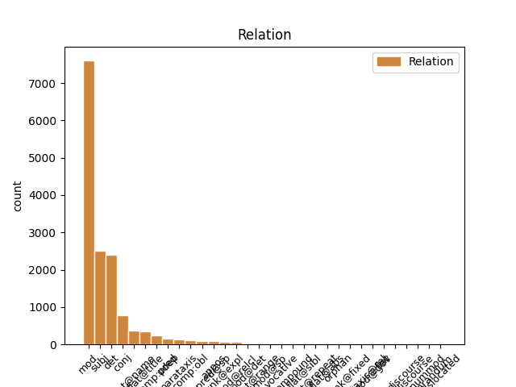
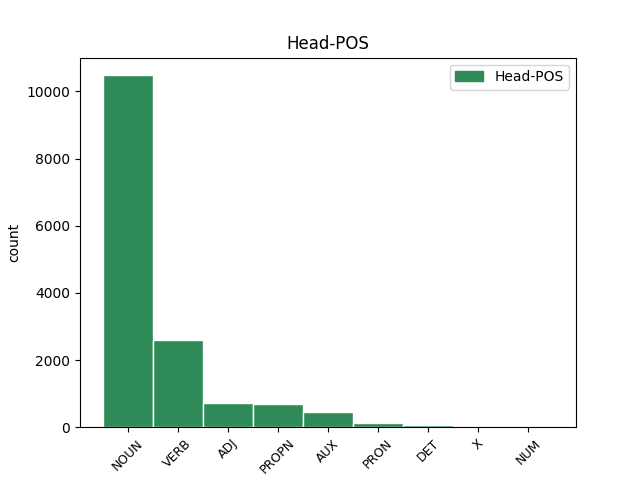
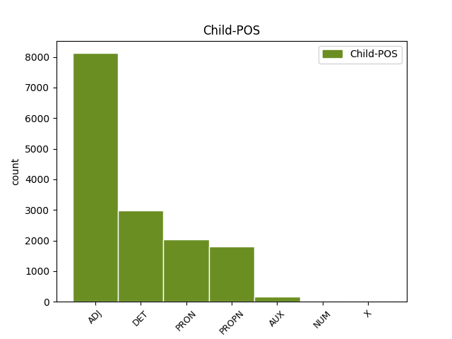

Distribution of features within this leaf



Agreement Rules sorted by frequency.
- When the dependent token is the modifer(mod) of the head token, and the dependent token is ADJ.
1 Під _ _ _ _ 0 _ _ _
2 час _ _ _ _ 0 _ _ _
3 показу _ _ _ _ 0 _ _ _
4 у _ _ _ _ 0 _ _ _
5 США _ _ _ _ 0 _ _ _
6 , _ _ _ _ 0 _ _ _
7 що _ _ _ _ 0 _ _ _
8 розпочався _ _ _ _ 0 _ _ _
9 18 _ _ _ _ 0 _ _ _
10 вересня _ _ _ _ 0 _ _ _
11 2015 _ _ _ _ 0 _ _ _
12 року _ _ _ _ 0 _ _ _
13 , _ _ _ _ 0 _ _ _
14 протягом _ _ _ _ 0 _ _ _
15 першого _ _ _ _ 0 _ _ _
16 тижня _ _ _ _ 0 _ _ _
17 фільм _ _ _ _ 0 _ _ _
18 був _ _ _ _ 0 _ _ _
19 показаний _ _ _ _ 0 _ _ _
20 у _ _ _ _ 0 _ _ _
21 545 _ _ _ _ 0 _ _ _
22 кінотеатрах _ _ _ _ 0 _ _ _
23 і _ _ _ _ 0 _ _ _
24 зібрав _ _ _ _ 0 _ _ _
25 7 222 035 _ _ _ _ 0 _ _ _
26 $ _ _ _ _ 0 _ _ _
27 , _ _ _ _ 0 _ _ _
28 що _ _ _ _ 0 _ _ _
29 на _ _ _ _ 0 _ _ _
30 той _ _ _ _ 0 _ _ _
31 час _ _ _ _ 0 _ _ _
32 дозволило _ _ _ _ 0 _ _ _
33 йому _ _ _ _ 0 _ _ _
34 зайняти _ _ _ _ 0 _ _ _
35 5 5 ADJ Mlonsa Case=Acc|Gender=Neut|Number=Sing|NumType=Ord|Uninflect=Yes 36 mod _ Id=39rk|LTranslit=5|Translit=5
36 місце місце NOUN Ncnsan Animacy=Inan|Case=Acc|Gender=Neut|Number=Sing 0 _ _ _
37 серед _ _ _ _ 0 _ _ _
38 усіх _ _ _ _ 0 _ _ _
39 прем'єр _ _ _ _ 0 _ _ _
40 . _ _ _ _ 0 _ _ _
1 Під _ _ _ _ 0 _ _ _
2 час _ _ _ _ 0 _ _ _
3 показу _ _ _ _ 0 _ _ _
4 у _ _ _ _ 0 _ _ _
5 США _ _ _ _ 0 _ _ _
6 , _ _ _ _ 0 _ _ _
7 що _ _ _ _ 0 _ _ _
8 розпочався _ _ _ _ 0 _ _ _
9 18 _ _ _ _ 0 _ _ _
10 вересня _ _ _ _ 0 _ _ _
11 2015 _ _ _ _ 0 _ _ _
12 року _ _ _ _ 0 _ _ _
13 , _ _ _ _ 0 _ _ _
14 протягом _ _ _ _ 0 _ _ _
15 першого _ _ _ _ 0 _ _ _
16 тижня _ _ _ _ 0 _ _ _
17 фільм _ _ _ _ 0 _ _ _
18 був _ _ _ _ 0 _ _ _
19 показаний _ _ _ _ 0 _ _ _
20 у _ _ _ _ 0 _ _ _
21 545 _ _ _ _ 0 _ _ _
22 кінотеатрах _ _ _ _ 0 _ _ _
23 і _ _ _ _ 0 _ _ _
24 зібрав _ _ _ _ 0 _ _ _
25 7 222 035 _ _ _ _ 0 _ _ _
26 $ _ _ _ _ 0 _ _ _
27 , _ _ _ _ 0 _ _ _
28 що _ _ _ _ 0 _ _ _
29 на _ _ _ _ 0 _ _ _
30 той _ _ _ _ 0 _ _ _
31 час _ _ _ _ 0 _ _ _
32 дозволило _ _ _ _ 0 _ _ _
33 йому _ _ _ _ 0 _ _ _
34 зайняти _ _ _ _ 0 _ _ _
35 5 _ _ _ _ 0 _ _ _
36 місце _ _ _ _ 0 _ _ _
37 серед _ _ _ _ 0 _ _ _
38 усіх увесь DET Pg----pga Case=Gen|Number=Plur|PronType=Tot 39 det _ Id=39rn|LTranslit=uveś|Translit=usich
39 прем'єр прем’єра NOUN Ncfpgn Animacy=Inan|Case=Gen|Gender=Fem|Number=Plur 0 _ _ _
40 . _ _ _ _ 0 _ _ _
1 Під _ _ _ _ 0 _ _ _
2 час _ _ _ _ 0 _ _ _
3 показу _ _ _ _ 0 _ _ _
4 у _ _ _ _ 0 _ _ _
5 США _ _ _ _ 0 _ _ _
6 , _ _ _ _ 0 _ _ _
7 що _ _ _ _ 0 _ _ _
8 розпочався _ _ _ _ 0 _ _ _
9 18 _ _ _ _ 0 _ _ _
10 вересня _ _ _ _ 0 _ _ _
11 2015 _ _ _ _ 0 _ _ _
12 року _ _ _ _ 0 _ _ _
13 , _ _ _ _ 0 _ _ _
14 протягом _ _ _ _ 0 _ _ _
15 першого _ _ _ _ 0 _ _ _
16 тижня _ _ _ _ 0 _ _ _
17 фільм _ _ _ _ 0 _ _ _
18 був _ _ _ _ 0 _ _ _
19 показаний _ _ _ _ 0 _ _ _
20 у _ _ _ _ 0 _ _ _
21 545 _ _ _ _ 0 _ _ _
22 кінотеатрах _ _ _ _ 0 _ _ _
23 і _ _ _ _ 0 _ _ _
24 зібрав _ _ _ _ 0 _ _ _
25 7 222 035 _ _ _ _ 0 _ _ _
26 $ _ _ _ _ 0 _ _ _
27 , _ _ _ _ 0 _ _ _
28 що що PRON Pr--nnsnn Animacy=Inan|Case=Nom|Gender=Neut|Number=Sing|PronType=Rel 32 subj _ Id=39rd|LTranslit=ščo|Translit=ščo
29 на _ _ _ _ 0 _ _ _
30 той _ _ _ _ 0 _ _ _
31 час _ _ _ _ 0 _ _ _
32 дозволило дозволити VERB Vmeis-sn Aspect=Perf|Gender=Neut|Mood=Ind|Number=Sing|Tense=Past|VerbForm=Fin 0 _ _ _
33 йому _ _ _ _ 0 _ _ _
34 зайняти _ _ _ _ 0 _ _ _
35 5 _ _ _ _ 0 _ _ _
36 місце _ _ _ _ 0 _ _ _
37 серед _ _ _ _ 0 _ _ _
38 усіх _ _ _ _ 0 _ _ _
39 прем'єр _ _ _ _ 0 _ _ _
40 . _ _ _ _ 0 _ _ _
1 Ми _ _ _ _ 0 _ _ _
2 покладаємося _ _ _ _ 0 _ _ _
3 на _ _ _ _ 0 _ _ _
4 ваші _ _ _ _ 0 _ _ _
5 внески _ _ _ _ 0 _ _ _
6 , _ _ _ _ 0 _ _ _
7 щоб _ _ _ _ 0 _ _ _
8 виконувати _ _ _ _ 0 _ _ _
9 нашу _ _ _ _ 0 _ _ _
10 місію _ _ _ _ 0 _ _ _
11 зі _ _ _ _ 0 _ _ _
12 збереження _ _ _ _ 0 _ _ _
13 Інтернету _ _ _ _ 0 _ _ _
14 відкритим відкритий ADJ Ap-msif-ep Aspect=Perf|Case=Ins|Degree=Pos|Gender=Masc|Number=Sing|VerbForm=Part|Voice=Pass 0 _ _ _
15 і _ _ _ _ 0 _ _ _
16 вільним вільний ADJ Afpmsif Case=Ins|Degree=Pos|Gender=Masc|Number=Sing 14 conj _ Id=342u|LTranslit=viľnyj|SpaceAfter=No|Translit=viľnym
17 . _ _ _ _ 0 _ _ _
1 — _ _ _ _ 0 _ _ _
2 Зараз _ _ _ _ 0 _ _ _
3 буде _ _ _ _ 0 _ _ _
4 біда _ _ _ _ 0 _ _ _
5 , _ _ _ _ 0 _ _ _
6 — _ _ _ _ 0 _ _ _
7 казав казати VERB Vmpis-sm Aspect=Imp|Gender=Masc|Mood=Ind|Number=Sing|Tense=Past|VerbForm=Fin 0 _ _ _
8 Микола Микола PROPN Npmsny Animacy=Anim|Case=Nom|Gender=Masc|NameType=Giv|Number=Sing 7 subj _ Id=39cm|LTranslit=Mykola|Translit=Mykola
9 Максимові _ _ _ _ 0 _ _ _
10 . _ _ _ _ 0 _ _ _
1 Особливі _ _ _ _ 0 _ _ _
2 слова _ _ _ _ 0 _ _ _
3 подяки _ _ _ _ 0 _ _ _
4 релігійним _ _ _ _ 0 _ _ _
5 громадам _ _ _ _ 0 _ _ _
6 м _ _ _ _ 0 _ _ _
7 . _ _ _ _ 0 _ _ _
8 Кіцмань _ _ _ _ 0 _ _ _
9 та _ _ _ _ 0 _ _ _
10 с _ _ _ _ 0 _ _ _
11 . _ _ _ _ 0 _ _ _
12 Мамаївці _ _ _ _ 0 _ _ _
13 та _ _ _ _ 0 _ _ _
14 їхнім _ _ _ _ 0 _ _ _
15 настоятелям _ _ _ _ 0 _ _ _
16 - _ _ _ _ 0 _ _ _
17 отцям _ _ _ _ 0 _ _ _
18 Юрію _ _ _ _ 0 _ _ _
19 ( _ _ _ _ 0 _ _ _
20 Кав'юку _ _ _ _ 0 _ _ _
21 ) _ _ _ _ 0 _ _ _
22 та _ _ _ _ 0 _ _ _
23 Івану Іван PROPN Npmsdy Animacy=Anim|Case=Dat|Gender=Masc|NameType=Giv|Number=Sing 0 _ _ _
24 ( _ _ _ _ 0 _ _ _
25 Марковському Марковський PROPN Npmsdy Animacy=Anim|Case=Dat|Gender=Masc|NameType=Sur|Number=Sing 23 flat@name _ Id=39f6|LTranslit=Markovśkyj|SpaceAfter=No|Translit=Markovśkomu
26 ) _ _ _ _ 0 _ _ _
27 , _ _ _ _ 0 _ _ _
28 без _ _ _ _ 0 _ _ _
29 яких _ _ _ _ 0 _ _ _
30 ця _ _ _ _ 0 _ _ _
31 поїздка _ _ _ _ 0 _ _ _
32 була _ _ _ _ 0 _ _ _
33 б _ _ _ _ 0 _ _ _
34 просто _ _ _ _ 0 _ _ _
35 неможливою _ _ _ _ 0 _ _ _
36 . _ _ _ _ 0 _ _ _
1 Але _ _ _ _ 0 _ _ _
2 що _ _ _ _ 0 _ _ _
3 б _ _ _ _ 0 _ _ _
4 ми _ _ _ _ 0 _ _ _
5 собі _ _ _ _ 0 _ _ _
6 не _ _ _ _ 0 _ _ _
7 нафантазували _ _ _ _ 0 _ _ _
8 , _ _ _ _ 0 _ _ _
9 правдою _ _ _ _ 0 _ _ _
10 буде _ _ _ _ 0 _ _ _
11 одне _ _ _ _ 0 _ _ _
12 - _ _ _ _ 0 _ _ _
13 відсутність _ _ _ _ 0 _ _ _
14 ресурсів _ _ _ _ 0 _ _ _
15 забрати _ _ _ _ 0 _ _ _
16 з _ _ _ _ 0 _ _ _
17 свого _ _ _ _ 0 _ _ _
18 життя _ _ _ _ 0 _ _ _
19 фактори _ _ _ _ 0 _ _ _
20 , _ _ _ _ 0 _ _ _
21 які який DET Pr----pna Case=Nom|Number=Plur|PronType=Rel 23 subj _ Id=3985|LTranslit=jakyj|Translit=jaki
22 його _ _ _ _ 0 _ _ _
23 отруюють отруювати VERB Vmpip3p Aspect=Imp|Mood=Ind|Number=Plur|Person=3|Tense=Pres|VerbForm=Fin 0 _ _ _
24 . _ _ _ _ 0 _ _ _
1 Для _ _ _ _ 0 _ _ _
2 забезпечення _ _ _ _ 0 _ _ _
3 поточних _ _ _ _ 0 _ _ _
4 потреб _ _ _ _ 0 _ _ _
5 технічного _ _ _ _ 0 _ _ _
6 обслуговування _ _ _ _ 0 _ _ _
7 службового _ _ _ _ 0 _ _ _
8 транспорту _ _ _ _ 0 _ _ _
9 артилеристів _ _ _ _ 0 _ _ _
10 - _ _ _ _ 0 _ _ _
11 самохідників _ _ _ _ 0 _ _ _
12 було _ _ _ _ 0 _ _ _
13 закуплено _ _ _ _ 0 _ _ _
14 4 _ _ _ _ 0 _ _ _
15 шини _ _ _ _ 0 _ _ _
16 175 _ _ _ _ 0 _ _ _
17 / _ _ _ _ 0 _ _ _
18 75 _ _ _ _ 0 _ _ _
19 / _ _ _ _ 0 _ _ _
20 13 _ _ _ _ 0 _ _ _
21 ( _ _ _ _ 0 _ _ _
22 800 _ _ _ _ 0 _ _ _
23 ₴ _ _ _ _ 0 _ _ _
24 ) _ _ _ _ 0 _ _ _
25 та _ _ _ _ 0 _ _ _
26 4 _ _ _ _ 0 _ _ _
27 шини _ _ _ _ 0 _ _ _
28 235 _ _ _ _ 0 _ _ _
29 / _ _ _ _ 0 _ _ _
30 75 _ _ _ _ 0 _ _ _
31 / _ _ _ _ 0 _ _ _
32 15 _ _ _ _ 0 _ _ _
33 ( _ _ _ _ 0 _ _ _
34 4528 _ _ _ _ 0 _ _ _
35 ₴ _ _ _ _ 0 _ _ _
36 ) _ _ _ _ 0 _ _ _
37 , _ _ _ _ 0 _ _ _
38 зовнішній _ _ _ _ 0 _ _ _
39 ремкомплект _ _ _ _ 0 _ _ _
40 арки _ _ _ _ 0 _ _ _
41 крила _ _ _ _ 0 _ _ _
42 для _ _ _ _ 0 _ _ _
43 автомобіля автомобіль NOUN Ncmsgn Animacy=Inan|Case=Gen|Gender=Masc|Number=Sing 0 _ _ _
44 Нива Нива PROPN Npfsnn Animacy=Inan|Case=Nom|Gender=Fem|Number=Sing 43 flat@title _ Id=39ii|LTranslit=Nyva|Translit=Nyva
45 ( _ _ _ _ 0 _ _ _
46 300 _ _ _ _ 0 _ _ _
47 ₴ _ _ _ _ 0 _ _ _
48 ) _ _ _ _ 0 _ _ _
49 . _ _ _ _ 0 _ _ _
1 Так _ _ _ _ 0 _ _ _
2 , _ _ _ _ 0 _ _ _
3 20 _ _ _ _ 0 _ _ _
4 вересня _ _ _ _ 0 _ _ _
5 на _ _ _ _ 0 _ _ _
6 сторінці _ _ _ _ 0 _ _ _
7 директора _ _ _ _ 0 _ _ _
8 Національного _ _ _ _ 0 _ _ _
9 комплексу _ _ _ _ 0 _ _ _
10 " _ _ _ _ 0 _ _ _
11 Експоцентр експоцентр NOUN Ncmsnn Animacy=Inan|Case=Nom|Gender=Masc|Number=Sing 0 _ _ _
12 України Україна PROPN Npfsgn Animacy=Inan|Case=Gen|Gender=Fem|Number=Sing 11 mod _ Id=390y|LTranslit=Ukrajina|SpaceAfter=No|Translit=Ukrajiny
13 " _ _ _ _ 0 _ _ _
14 ( _ _ _ _ 0 _ _ _
15 раніше _ _ _ _ 0 _ _ _
16 – _ _ _ _ 0 _ _ _
17 ВДНГ _ _ _ _ 0 _ _ _
18 ) _ _ _ _ 0 _ _ _
19 у _ _ _ _ 0 _ _ _
20 Facebook _ _ _ _ 0 _ _ _
21 з’явилося _ _ _ _ 0 _ _ _
22 повідомлення _ _ _ _ 0 _ _ _
23 про _ _ _ _ 0 _ _ _
24 те _ _ _ _ 0 _ _ _
25 , _ _ _ _ 0 _ _ _
26 що _ _ _ _ 0 _ _ _
27 дельфінарій _ _ _ _ 0 _ _ _
28 " _ _ _ _ 0 _ _ _
29 НЕМО _ _ _ _ 0 _ _ _
30 " _ _ _ _ 0 _ _ _
31 запропонував _ _ _ _ 0 _ _ _
32 звести _ _ _ _ 0 _ _ _
33 нову _ _ _ _ 0 _ _ _
34 конструкцію _ _ _ _ 0 _ _ _
35 на _ _ _ _ 0 _ _ _
36 території _ _ _ _ 0 _ _ _
37 Виставкового _ _ _ _ 0 _ _ _
38 центру _ _ _ _ 0 _ _ _
39 . _ _ _ _ 0 _ _ _
1 Під _ _ _ _ 0 _ _ _
2 час _ _ _ _ 0 _ _ _
3 показу _ _ _ _ 0 _ _ _
4 у _ _ _ _ 0 _ _ _
5 США _ _ _ _ 0 _ _ _
6 , _ _ _ _ 0 _ _ _
7 що _ _ _ _ 0 _ _ _
8 розпочався _ _ _ _ 0 _ _ _
9 18 _ _ _ _ 0 _ _ _
10 вересня _ _ _ _ 0 _ _ _
11 2015 _ _ _ _ 0 _ _ _
12 року _ _ _ _ 0 _ _ _
13 , _ _ _ _ 0 _ _ _
14 протягом _ _ _ _ 0 _ _ _
15 першого _ _ _ _ 0 _ _ _
16 тижня _ _ _ _ 0 _ _ _
17 фільм _ _ _ _ 0 _ _ _
18 був бути AUX Vapis-sm Aspect=Imp|Gender=Masc|Mood=Ind|Number=Sing|Tense=Past|VerbForm=Fin 0 _ _ _
19 показаний показаний ADJ Ap-msnf-ep Aspect=Perf|Case=Nom|Gender=Masc|Number=Sing|VerbForm=Part|Voice=Pass 18 comp:pred _ Id=39r4|LTranslit=pokazanyj|Translit=pokazanyj
20 у _ _ _ _ 0 _ _ _
21 545 _ _ _ _ 0 _ _ _
22 кінотеатрах _ _ _ _ 0 _ _ _
23 і _ _ _ _ 0 _ _ _
24 зібрав _ _ _ _ 0 _ _ _
25 7 222 035 _ _ _ _ 0 _ _ _
26 $ _ _ _ _ 0 _ _ _
27 , _ _ _ _ 0 _ _ _
28 що _ _ _ _ 0 _ _ _
29 на _ _ _ _ 0 _ _ _
30 той _ _ _ _ 0 _ _ _
31 час _ _ _ _ 0 _ _ _
32 дозволило _ _ _ _ 0 _ _ _
33 йому _ _ _ _ 0 _ _ _
34 зайняти _ _ _ _ 0 _ _ _
35 5 _ _ _ _ 0 _ _ _
36 місце _ _ _ _ 0 _ _ _
37 серед _ _ _ _ 0 _ _ _
38 усіх _ _ _ _ 0 _ _ _
39 прем'єр _ _ _ _ 0 _ _ _
40 . _ _ _ _ 0 _ _ _
1 Особливі _ _ _ _ 0 _ _ _
2 слова _ _ _ _ 0 _ _ _
3 подяки _ _ _ _ 0 _ _ _
4 релігійним _ _ _ _ 0 _ _ _
5 громадам _ _ _ _ 0 _ _ _
6 м _ _ _ _ 0 _ _ _
7 . _ _ _ _ 0 _ _ _
8 Кіцмань _ _ _ _ 0 _ _ _
9 та _ _ _ _ 0 _ _ _
10 с _ _ _ _ 0 _ _ _
11 . _ _ _ _ 0 _ _ _
12 Мамаївці _ _ _ _ 0 _ _ _
13 та _ _ _ _ 0 _ _ _
14 їхнім _ _ _ _ 0 _ _ _
15 настоятелям _ _ _ _ 0 _ _ _
16 - _ _ _ _ 0 _ _ _
17 отцям _ _ _ _ 0 _ _ _
18 Юрію Юрій PROPN Npmsdy Animacy=Anim|Case=Dat|Gender=Masc|NameType=Giv|Number=Sing 0 _ _ _
19 ( _ _ _ _ 0 _ _ _
20 Кав'юку _ _ _ _ 0 _ _ _
21 ) _ _ _ _ 0 _ _ _
22 та _ _ _ _ 0 _ _ _
23 Івану Іван PROPN Npmsdy Animacy=Anim|Case=Dat|Gender=Masc|NameType=Giv|Number=Sing 18 conj _ Id=39f4|LTranslit=Ivan|Translit=Ivanu
24 ( _ _ _ _ 0 _ _ _
25 Марковському _ _ _ _ 0 _ _ _
26 ) _ _ _ _ 0 _ _ _
27 , _ _ _ _ 0 _ _ _
28 без _ _ _ _ 0 _ _ _
29 яких _ _ _ _ 0 _ _ _
30 ця _ _ _ _ 0 _ _ _
31 поїздка _ _ _ _ 0 _ _ _
32 була _ _ _ _ 0 _ _ _
33 б _ _ _ _ 0 _ _ _
34 просто _ _ _ _ 0 _ _ _
35 неможливою _ _ _ _ 0 _ _ _
36 . _ _ _ _ 0 _ _ _
1 Перейти _ _ _ _ 0 _ _ _
2 до _ _ _ _ 0 _ _ _
3 іншої _ _ _ _ 0 _ _ _
4 групи _ _ _ _ 0 _ _ _
5 , _ _ _ _ 0 _ _ _
6 переселитися _ _ _ _ 0 _ _ _
7 в _ _ _ _ 0 _ _ _
8 іншу _ _ _ _ 0 _ _ _
9 кімнату _ _ _ _ 0 _ _ _
10 , _ _ _ _ 0 _ _ _
11 вступити _ _ _ _ 0 _ _ _
12 до _ _ _ _ 0 _ _ _
13 іншого _ _ _ _ 0 _ _ _
14 ВНЗ _ _ _ _ 0 _ _ _
15 чи _ _ _ _ 0 _ _ _
16 навіть _ _ _ _ 0 _ _ _
17 продовжити _ _ _ _ 0 _ _ _
18 навчання _ _ _ _ 0 _ _ _
19 деінде _ _ _ _ 0 _ _ _
20 в _ _ _ _ 0 _ _ _
21 Україні _ _ _ _ 0 _ _ _
22 або _ _ _ _ 0 _ _ _
23 за _ _ _ _ 0 _ _ _
24 кордоном _ _ _ _ 0 _ _ _
25 – _ _ _ _ 0 _ _ _
26 так _ _ _ _ 0 _ _ _
27 , _ _ _ _ 0 _ _ _
28 це _ _ _ _ 0 _ _ _
29 може _ _ _ _ 0 _ _ _
30 скандалізувати _ _ _ _ 0 _ _ _
31 твоїх _ _ _ _ 0 _ _ _
32 батьків _ _ _ _ 0 _ _ _
33 і _ _ _ _ 0 _ _ _
34 викликати _ _ _ _ 0 _ _ _
35 подив _ _ _ _ 0 _ _ _
36 і _ _ _ _ 0 _ _ _
37 нерозуміння _ _ _ _ 0 _ _ _
38 у _ _ _ _ 0 _ _ _
39 оточення _ _ _ _ 0 _ _ _
40 , _ _ _ _ 0 _ _ _
41 але _ _ _ _ 0 _ _ _
42 точно _ _ _ _ 0 _ _ _
43 врятує врятувати VERB Vmeif3s Aspect=Perf|Mood=Ind|Number=Sing|Person=3|Tense=Fut|VerbForm=Fin 0 _ _ _
44 тобі ти PRON Pp-2-ysdn Animacy=Anim|Case=Dat|Number=Sing|Person=2|PronType=Prs 43 comp:obl _ Id=2jg3|LTranslit=ty|Translit=tobi
45 час _ _ _ _ 0 _ _ _
46 , _ _ _ _ 0 _ _ _
47 нерви _ _ _ _ 0 _ _ _
48 і _ _ _ _ 0 _ _ _
49 сили _ _ _ _ 0 _ _ _
50 . _ _ _ _ 0 _ _ _
1 Ми _ _ _ _ 0 _ _ _
2 покладаємося _ _ _ _ 0 _ _ _
3 на _ _ _ _ 0 _ _ _
4 ваші _ _ _ _ 0 _ _ _
5 внески _ _ _ _ 0 _ _ _
6 , _ _ _ _ 0 _ _ _
7 щоб _ _ _ _ 0 _ _ _
8 виконувати _ _ _ _ 0 _ _ _
9 нашу _ _ _ _ 0 _ _ _
10 місію _ _ _ _ 0 _ _ _
11 зі _ _ _ _ 0 _ _ _
12 збереження збереження NOUN Ncnsgn Animacy=Inan|Case=Gen|Gender=Neut|Number=Sing 0 _ _ _
13 Інтернету _ _ _ _ 0 _ _ _
14 відкритим відкритий ADJ Ap-msif-ep Aspect=Perf|Case=Ins|Degree=Pos|Gender=Masc|Number=Sing|VerbForm=Part|Voice=Pass 12 comp:pred@sp _ Id=342s|LTranslit=vidkrytyj|Translit=vidkrytym
15 і _ _ _ _ 0 _ _ _
16 вільним _ _ _ _ 0 _ _ _
17 . _ _ _ _ 0 _ _ _
1 На _ _ _ _ 0 _ _ _
2 моє _ _ _ _ 0 _ _ _
3 запитання _ _ _ _ 0 _ _ _
4 пояснила _ _ _ _ 0 _ _ _
5 , _ _ _ _ 0 _ _ _
6 що _ _ _ _ 0 _ _ _
7 " _ _ _ _ 0 _ _ _
8 - _ _ _ _ 0 _ _ _
9 ті _ _ _ _ 0 _ _ _
10 слимаки _ _ _ _ 0 _ _ _
11 , _ _ _ _ 0 _ _ _
12 то то PRON Pd--nnsnn Animacy=Inan|Case=Nom|Gender=Neut|Number=Sing|PronType=Dem 14 unk@expl _ Id=393h|LTranslit=to|Translit=to
13 така _ _ _ _ 0 _ _ _
14 зараза зараза NOUN Ncfsnn Animacy=Inan|Case=Nom|Gender=Fem|Number=Sing 0 _ _ _
15 , _ _ _ _ 0 _ _ _
16 з'їдають _ _ _ _ 0 _ _ _
17 на _ _ _ _ 0 _ _ _
18 городі _ _ _ _ 0 _ _ _
19 чисто _ _ _ _ 0 _ _ _
20 все _ _ _ _ 0 _ _ _
21 ! _ _ _ _ 0 _ _ _
1 Але _ _ _ _ 0 _ _ _
2 заки _ _ _ _ 0 _ _ _
3 мр _ _ _ _ 0 _ _ _
4 . _ _ _ _ 0 _ _ _
5 Морріс _ _ _ _ 0 _ _ _
6 встиг _ _ _ _ 0 _ _ _
7 повідомити _ _ _ _ 0 _ _ _
8 свого _ _ _ _ 0 _ _ _
9 земляка _ _ _ _ 0 _ _ _
10 , _ _ _ _ 0 _ _ _
11 що _ _ _ _ 0 _ _ _
12 передучора _ _ _ _ 0 _ _ _
13 безробітні _ _ _ _ 0 _ _ _
14 витовкли _ _ _ _ 0 _ _ _
15 в _ _ _ _ 0 _ _ _
16 його _ _ _ _ 0 _ _ _
17 ресторані _ _ _ _ 0 _ _ _
18 всі _ _ _ _ 0 _ _ _
19 вікна _ _ _ _ 0 _ _ _
20 , _ _ _ _ 0 _ _ _
21 то _ _ _ _ 0 _ _ _
22 галаслива _ _ _ _ 0 _ _ _
23 й _ _ _ _ 0 _ _ _
24 нестримна _ _ _ _ 0 _ _ _
25 людська _ _ _ _ 0 _ _ _
26 повінь _ _ _ _ 0 _ _ _
27 віднесла віднести VERB Vmeis-sf Aspect=Perf|Gender=Fem|Mood=Ind|Number=Sing|Tense=Past|VerbForm=Fin 0 _ _ _
28 обох _ _ _ _ 0 _ _ _
29 джентльменів _ _ _ _ 0 _ _ _
30 на _ _ _ _ 0 _ _ _
31 яких _ _ _ _ 0 _ _ _
32 двадцять _ _ _ _ 0 _ _ _
33 ярдів _ _ _ _ 0 _ _ _
34 одного один DET Pi--mysaa Animacy=Anim|Case=Acc|Gender=Masc|Number=Sing|PronType=Ind 27 udep _ Id=33iv|LTranslit=odyn|Translit=odnoho
35 від _ _ _ _ 0 _ _ _
36 другого _ _ _ _ 0 _ _ _
37 . _ _ _ _ 0 _ _ _
1 До _ _ _ _ 0 _ _ _
2 речі _ _ _ _ 0 _ _ _
3 буде _ _ _ _ 0 _ _ _
4 запримітити _ _ _ _ 0 _ _ _
5 , _ _ _ _ 0 _ _ _
6 що _ _ _ _ 0 _ _ _
7 мр _ _ _ _ 0 _ _ _
8 . _ _ _ _ 0 _ _ _
9 Віллі _ _ _ _ 0 _ _ _
10 Морріс _ _ _ _ 0 _ _ _
11 мав мати VERB Vmpis-sm Aspect=Imp|Gender=Masc|Mood=Ind|Number=Sing|Tense=Past|VerbForm=Fin 0 _ _ _
12 ресторан _ _ _ _ 0 _ _ _
13 при _ _ _ _ 0 _ _ _
14 Вестчестрі _ _ _ _ 0 _ _ _
15 - _ _ _ _ 0 _ _ _
16 авеню _ _ _ _ 0 _ _ _
17 , _ _ _ _ 0 _ _ _
18 а _ _ _ _ 0 _ _ _
19 мр _ _ _ _ 0 _ _ _
20 . _ _ _ _ 0 _ _ _
21 Фред _ _ _ _ 0 _ _ _
22 Кетлінг _ _ _ _ 0 _ _ _
23 був бути AUX Vapis-sm Aspect=Imp|Gender=Masc|Mood=Ind|Number=Sing|Tense=Past|VerbForm=Fin 11 conj _ Id=33ff|LTranslit=buty|Translit=buv
24 босом _ _ _ _ 0 _ _ _
25 у _ _ _ _ 0 _ _ _
26 фабриці _ _ _ _ 0 _ _ _
27 яринних _ _ _ _ 0 _ _ _
28 консерв _ _ _ _ 0 _ _ _
29 на _ _ _ _ 0 _ _ _
30 10-му _ _ _ _ 0 _ _ _
31 стріті _ _ _ _ 0 _ _ _
32 . _ _ _ _ 0 _ _ _
1 Сукня _ _ _ _ 0 _ _ _
2 - _ _ _ _ 0 _ _ _
3 кардиган _ _ _ _ 0 _ _ _
4 оздоблена оздоблений ADJ Ap-fsns-ep Aspect=Perf|Case=Nom|Gender=Fem|Number=Sing|VerbForm=Part|Voice=Pass 0 _ _ _
5 монохромною _ _ _ _ 0 _ _ _
6 вишивкою _ _ _ _ 0 _ _ _
7 : _ _ _ _ 0 _ _ _
8 геометричний _ _ _ _ 0 _ _ _
9 орнамент _ _ _ _ 0 _ _ _
10 створений створений ADJ Ap-msnf-ep Aspect=Perf|Case=Nom|Gender=Masc|Number=Sing|VerbForm=Part|Voice=Pass 4 parataxis _ Id=2pn3|LTranslit=stvorenyj|Translit=stvorenyj
11 на _ _ _ _ 0 _ _ _
12 основі _ _ _ _ 0 _ _ _
13 квадратів _ _ _ _ 0 _ _ _
14 - _ _ _ _ 0 _ _ _
15 одного _ _ _ _ 0 _ _ _
16 із _ _ _ _ 0 _ _ _
17 символів _ _ _ _ 0 _ _ _
18 землі _ _ _ _ 0 _ _ _
19 , _ _ _ _ 0 _ _ _
20 миру _ _ _ _ 0 _ _ _
21 та _ _ _ _ 0 _ _ _
22 достатку _ _ _ _ 0 _ _ _
23 ; _ _ _ _ 0 _ _ _
24 рослинний _ _ _ _ 0 _ _ _
25 - _ _ _ _ 0 _ _ _
26 варіація _ _ _ _ 0 _ _ _
27 на _ _ _ _ 0 _ _ _
28 тему _ _ _ _ 0 _ _ _
29 квітки _ _ _ _ 0 _ _ _
30 Берегині _ _ _ _ 0 _ _ _
31 , _ _ _ _ 0 _ _ _
32 символу _ _ _ _ 0 _ _ _
33 жінки _ _ _ _ 0 _ _ _
34 - _ _ _ _ 0 _ _ _
35 матері _ _ _ _ 0 _ _ _
36 і _ _ _ _ 0 _ _ _
37 самого _ _ _ _ 0 _ _ _
38 Дерева _ _ _ _ 0 _ _ _
39 Життя _ _ _ _ 0 _ _ _
40 . _ _ _ _ 0 _ _ _
1 Його він PRON Pp-3m-sgn Case=Gen|Gender=Masc|Number=Sing|Person=3|PronType=Prs 2 mod _ Id=39l6|LTranslit=vin|Translit=Joho
2 переможцем переможець NOUN Ncmsiy Animacy=Anim|Case=Ins|Gender=Masc|Number=Sing 0 _ _ _
3 визнали _ _ _ _ 0 _ _ _
4 компанію _ _ _ _ 0 _ _ _
5 Mittal _ _ _ _ 0 _ _ _
6 Steel _ _ _ _ 0 _ _ _
7 Germany _ _ _ _ 0 _ _ _
8 GmbH _ _ _ _ 0 _ _ _
9 . _ _ _ _ 0 _ _ _
1 Сукня _ _ _ _ 0 _ _ _
2 - _ _ _ _ 0 _ _ _
3 кардиган _ _ _ _ 0 _ _ _
4 оздоблена _ _ _ _ 0 _ _ _
5 монохромною _ _ _ _ 0 _ _ _
6 вишивкою _ _ _ _ 0 _ _ _
7 : _ _ _ _ 0 _ _ _
8 геометричний _ _ _ _ 0 _ _ _
9 орнамент _ _ _ _ 0 _ _ _
10 створений _ _ _ _ 0 _ _ _
11 на _ _ _ _ 0 _ _ _
12 основі _ _ _ _ 0 _ _ _
13 квадратів _ _ _ _ 0 _ _ _
14 - _ _ _ _ 0 _ _ _
15 одного _ _ _ _ 0 _ _ _
16 із _ _ _ _ 0 _ _ _
17 символів _ _ _ _ 0 _ _ _
18 землі _ _ _ _ 0 _ _ _
19 , _ _ _ _ 0 _ _ _
20 миру _ _ _ _ 0 _ _ _
21 та _ _ _ _ 0 _ _ _
22 достатку _ _ _ _ 0 _ _ _
23 ; _ _ _ _ 0 _ _ _
24 рослинний рослинний ADJ Ao-msnf Case=Nom|Gender=Masc|Number=Sing 26 subj _ Id=2pnh|LTranslit=roslynnyj|Promoted=Yes|Translit=roslynnyj
25 - _ _ _ _ 0 _ _ _
26 варіація варіація NOUN Ncfsnn Animacy=Inan|Case=Nom|Gender=Fem|Number=Sing 0 _ _ _
27 на _ _ _ _ 0 _ _ _
28 тему _ _ _ _ 0 _ _ _
29 квітки _ _ _ _ 0 _ _ _
30 Берегині _ _ _ _ 0 _ _ _
31 , _ _ _ _ 0 _ _ _
32 символу _ _ _ _ 0 _ _ _
33 жінки _ _ _ _ 0 _ _ _
34 - _ _ _ _ 0 _ _ _
35 матері _ _ _ _ 0 _ _ _
36 і _ _ _ _ 0 _ _ _
37 самого _ _ _ _ 0 _ _ _
38 Дерева _ _ _ _ 0 _ _ _
39 Життя _ _ _ _ 0 _ _ _
40 . _ _ _ _ 0 _ _ _
1 « _ _ _ _ 0 _ _ _
2 Чому _ _ _ _ 0 _ _ _
3 такі такий DET Pd---npaa Animacy=Inan|Case=Acc|Number=Plur|PronType=Dem 4 mod@det _ Id=2dte|LTranslit=takyj|Translit=taki
4 представницькі представницький ADJ Ao--pasn Animacy=Inan|Case=Acc|Number=Plur 0 _ _ _
5 змагання _ _ _ _ 0 _ _ _
6 вирішили _ _ _ _ 0 _ _ _
7 проводити _ _ _ _ 0 _ _ _
8 саме _ _ _ _ 0 _ _ _
9 у _ _ _ _ 0 _ _ _
10 нас _ _ _ _ 0 _ _ _
11 ? _ _ _ _ 0 _ _ _
1 Показ _ _ _ _ 0 _ _ _
2 в _ _ _ _ 0 _ _ _
3 Україні _ _ _ _ 0 _ _ _
4 тривав _ _ _ _ 0 _ _ _
5 7 _ _ _ _ 0 _ _ _
6 тижнів _ _ _ _ 0 _ _ _
7 і _ _ _ _ 0 _ _ _
8 завершився завершитися VERB Vmeis-sm Aspect=Perf|Gender=Masc|Mood=Ind|Number=Sing|Tense=Past|VerbForm=Fin 0 _ _ _
9 8 _ _ _ _ 0 _ _ _
10 листопада _ _ _ _ 0 _ _ _
11 2015 _ _ _ _ 0 _ _ _
12 року _ _ _ _ 0 _ _ _
13 , _ _ _ _ 0 _ _ _
14 за _ _ _ _ 0 _ _ _
15 час _ _ _ _ 0 _ _ _
16 прокату _ _ _ _ 0 _ _ _
17 було бути AUX Vapis-sn Aspect=Imp|Gender=Neut|Mood=Ind|Number=Sing|Tense=Past|VerbForm=Fin 8 parataxis _ Id=39q6|LTranslit=buty|Translit=bulo
18 продано _ _ _ _ 0 _ _ _
19 442 509 _ _ _ _ 0 _ _ _
20 квитків _ _ _ _ 0 _ _ _
21 та _ _ _ _ 0 _ _ _
22 зібрано _ _ _ _ 0 _ _ _
23 29 037 892 _ _ _ _ 0 _ _ _
24 ₴ _ _ _ _ 0 _ _ _
25 , _ _ _ _ 0 _ _ _
26 або _ _ _ _ 0 _ _ _
27 ж _ _ _ _ 0 _ _ _
28 1,357,145 _ _ _ _ 0 _ _ _
29 $ _ _ _ _ 0 _ _ _
30 . _ _ _ _ 0 _ _ _
1 Якщо _ _ _ _ 0 _ _ _
2 протягом _ _ _ _ 0 _ _ _
3 трьох _ _ _ _ 0 _ _ _
4 років _ _ _ _ 0 _ _ _
5 колишній _ _ _ _ 0 _ _ _
6 власник _ _ _ _ 0 _ _ _
7 транспортного _ _ _ _ 0 _ _ _
8 засобу _ _ _ _ 0 _ _ _
9 не _ _ _ _ 0 _ _ _
10 вимагатиме _ _ _ _ 0 _ _ _
11 передання _ _ _ _ 0 _ _ _
12 йому _ _ _ _ 0 _ _ _
13 суми _ _ _ _ 0 _ _ _
14 виторгу _ _ _ _ 0 _ _ _
15 , _ _ _ _ 0 _ _ _
16 ця _ _ _ _ 0 _ _ _
17 сума _ _ _ _ 0 _ _ _
18 переходить _ _ _ _ 0 _ _ _
19 у _ _ _ _ 0 _ _ _
20 власність _ _ _ _ 0 _ _ _
21 територіальної _ _ _ _ 0 _ _ _
22 громади громада NOUN Ncfsgn Animacy=Inan|Case=Gen|Gender=Fem|Number=Sing 0 _ _ _
23 , _ _ _ _ 0 _ _ _
24 на _ _ _ _ 0 _ _ _
25 території _ _ _ _ 0 _ _ _
26 якої _ _ _ _ 0 _ _ _
27 було бути AUX Vapis-sn Aspect=Imp|Gender=Neut|Mood=Ind|Number=Sing|Tense=Past|VerbForm=Fin 22 mod@relcl _ Id=2e9k|LTranslit=buty|Translit=bulo
28 знайдено _ _ _ _ 0 _ _ _
29 транспортний _ _ _ _ 0 _ _ _
30 засіб _ _ _ _ 0 _ _ _
31 . _ _ _ _ 0 _ _ _
1 Під _ _ _ _ 0 _ _ _
2 час _ _ _ _ 0 _ _ _
3 показу _ _ _ _ 0 _ _ _
4 у _ _ _ _ 0 _ _ _
5 США _ _ _ _ 0 _ _ _
6 , _ _ _ _ 0 _ _ _
7 що _ _ _ _ 0 _ _ _
8 розпочався розпочатися VERB Vmeis-sm Aspect=Perf|Gender=Masc|Mood=Ind|Number=Sing|Tense=Past|VerbForm=Fin 0 _ _ _
9 18 18 ADJ Mlonsg Case=Gen|Gender=Neut|Number=Sing|NumType=Ord|Uninflect=Yes 8 udep _ Id=39qu|LTranslit=18|Promoted=Yes|Translit=18
10 вересня _ _ _ _ 0 _ _ _
11 2015 _ _ _ _ 0 _ _ _
12 року _ _ _ _ 0 _ _ _
13 , _ _ _ _ 0 _ _ _
14 протягом _ _ _ _ 0 _ _ _
15 першого _ _ _ _ 0 _ _ _
16 тижня _ _ _ _ 0 _ _ _
17 фільм _ _ _ _ 0 _ _ _
18 був _ _ _ _ 0 _ _ _
19 показаний _ _ _ _ 0 _ _ _
20 у _ _ _ _ 0 _ _ _
21 545 _ _ _ _ 0 _ _ _
22 кінотеатрах _ _ _ _ 0 _ _ _
23 і _ _ _ _ 0 _ _ _
24 зібрав _ _ _ _ 0 _ _ _
25 7 222 035 _ _ _ _ 0 _ _ _
26 $ _ _ _ _ 0 _ _ _
27 , _ _ _ _ 0 _ _ _
28 що _ _ _ _ 0 _ _ _
29 на _ _ _ _ 0 _ _ _
30 той _ _ _ _ 0 _ _ _
31 час _ _ _ _ 0 _ _ _
32 дозволило _ _ _ _ 0 _ _ _
33 йому _ _ _ _ 0 _ _ _
34 зайняти _ _ _ _ 0 _ _ _
35 5 _ _ _ _ 0 _ _ _
36 місце _ _ _ _ 0 _ _ _
37 серед _ _ _ _ 0 _ _ _
38 усіх _ _ _ _ 0 _ _ _
39 прем'єр _ _ _ _ 0 _ _ _
40 . _ _ _ _ 0 _ _ _
1 В _ _ _ _ 0 _ _ _
2 суботу субота NOUN Ncfsan Animacy=Inan|Case=Acc|Gender=Fem|Number=Sing 0 _ _ _
3 , _ _ _ _ 0 _ _ _
4 5 5 ADJ Mlonsg Case=Gen|Gender=Neut|Number=Sing|NumType=Ord|Uninflect=Yes 2 appos _ Id=2iod|LTranslit=5|Promoted=Yes|Translit=5
5 серпня _ _ _ _ 0 _ _ _
6 Приймальна _ _ _ _ 0 _ _ _
7 комісія _ _ _ _ 0 _ _ _
8 НаУКМА _ _ _ _ 0 _ _ _
9 працюватиме _ _ _ _ 0 _ _ _
10 до _ _ _ _ 0 _ _ _
11 18 _ _ _ _ 0 _ _ _
12 - _ _ _ _ 0 _ _ _
13 00 _ _ _ _ 0 _ _ _
14 ! _ _ _ _ 0 _ _ _
1 Так _ _ _ _ 0 _ _ _
2 , _ _ _ _ 0 _ _ _
3 вона _ _ _ _ 0 _ _ _
4 швидко _ _ _ _ 0 _ _ _
5 піде _ _ _ _ 0 _ _ _
6 в _ _ _ _ 0 _ _ _
7 Харківському _ _ _ _ 0 _ _ _
8 Держтеатрі _ _ _ _ 0 _ _ _
9 " _ _ _ _ 0 _ _ _
10 Березіль _ _ _ _ 0 _ _ _
11 " _ _ _ _ 0 _ _ _
12 і _ _ _ _ 0 _ _ _
13 одночасно _ _ _ _ 0 _ _ _
14 буде _ _ _ _ 0 _ _ _
15 друкуватися _ _ _ _ 0 _ _ _
16 , _ _ _ _ 0 _ _ _
17 у _ _ _ _ 0 _ _ _
18 журналі журнал NOUN Ncmsln Animacy=Inan|Case=Loc|Gender=Masc|Number=Sing 0 _ _ _
19 Вільної _ _ _ _ 0 _ _ _
20 Академії _ _ _ _ 0 _ _ _
21 Пролетарської _ _ _ _ 0 _ _ _
22 Літератури _ _ _ _ 0 _ _ _
23 — _ _ _ _ 0 _ _ _
24 " _ _ _ _ 0 _ _ _
25 Вапліте Вапліте PROPN Npnsnn Animacy=Inan|Case=Nom|Gender=Neut|Number=Sing|Uninflect=Yes 18 appos _ Id=2vga|LTranslit=Vaplite|SpaceAfter=No|Translit=Vaplite
26 " _ _ _ _ 0 _ _ _
27 , _ _ _ _ 0 _ _ _
28 де _ _ _ _ 0 _ _ _
29 разом _ _ _ _ 0 _ _ _
30 з _ _ _ _ 0 _ _ _
31 нею _ _ _ _ 0 _ _ _
32 ти _ _ _ _ 0 _ _ _
33 можеш _ _ _ _ 0 _ _ _
34 почитати _ _ _ _ 0 _ _ _
35 прекрасний _ _ _ _ 0 _ _ _
36 новий _ _ _ _ 0 _ _ _
37 роман _ _ _ _ 0 _ _ _
38 " _ _ _ _ 0 _ _ _
39 Вальдшнепи _ _ _ _ 0 _ _ _
40 " _ _ _ _ 0 _ _ _
41 Миколи _ _ _ _ 0 _ _ _
42 Хвильового _ _ _ _ 0 _ _ _
43 , _ _ _ _ 0 _ _ _
44 якого _ _ _ _ 0 _ _ _
45 ти _ _ _ _ 0 _ _ _
46 вже _ _ _ _ 0 _ _ _
47 давно _ _ _ _ 0 _ _ _
48 знаєш _ _ _ _ 0 _ _ _
49 і _ _ _ _ 0 _ _ _
50 любиш _ _ _ _ 0 _ _ _
51 . _ _ _ _ 0 _ _ _
1 Приблизно _ _ _ _ 0 _ _ _
2 порівну _ _ _ _ 0 _ _ _
3 виявилося _ _ _ _ 0 _ _ _
4 тих той DET Pd----pga Case=Gen|Number=Plur|PronType=Dem 0 _ _ _
5 , _ _ _ _ 0 _ _ _
6 які _ _ _ _ 0 _ _ _
7 мали _ _ _ _ 0 _ _ _
8 достатньо _ _ _ _ 0 _ _ _
9 грошей _ _ _ _ 0 _ _ _
10 і _ _ _ _ 0 _ _ _
11 робили _ _ _ _ 0 _ _ _
12 заощадження _ _ _ _ 0 _ _ _
13 ( _ _ _ _ 0 _ _ _
14 6 _ _ _ _ 0 _ _ _
15 , _ _ _ _ 0 _ _ _
16 2 _ _ _ _ 0 _ _ _
17 % _ _ _ _ 0 _ _ _
18 ) _ _ _ _ 0 _ _ _
19 , _ _ _ _ 0 _ _ _
20 і _ _ _ _ 0 _ _ _
21 тих той DET Pd----pga Case=Gen|Number=Plur|PronType=Dem 4 conj _ Id=26z4|LTranslit=toj|SpaceAfter=No|Translit=tych
22 , _ _ _ _ 0 _ _ _
23 кому _ _ _ _ 0 _ _ _
24 не _ _ _ _ 0 _ _ _
25 вистачало _ _ _ _ 0 _ _ _
26 навіть _ _ _ _ 0 _ _ _
27 на _ _ _ _ 0 _ _ _
28 харчування _ _ _ _ 0 _ _ _
29 ( _ _ _ _ 0 _ _ _
30 4 _ _ _ _ 0 _ _ _
31 , _ _ _ _ 0 _ _ _
32 9 _ _ _ _ 0 _ _ _
33 % _ _ _ _ 0 _ _ _
34 ) _ _ _ _ 0 _ _ _
35 . _ _ _ _ 0 _ _ _
1 Благородна _ _ _ _ 0 _ _ _
2 і _ _ _ _ 0 _ _ _
3 в _ _ _ _ 0 _ _ _
4 стрімкому _ _ _ _ 0 _ _ _
5 вихорі _ _ _ _ 0 _ _ _
6 - _ _ _ _ 0 _ _ _
7 льоті _ _ _ _ 0 _ _ _
8 , _ _ _ _ 0 _ _ _
9 коли _ _ _ _ 0 _ _ _
10 , _ _ _ _ 0 _ _ _
11 налякана наляканий ADJ Ap-fsns-ep Aspect=Perf|Case=Nom|Gender=Fem|Number=Sing|VerbForm=Part|Voice=Pass 14 mod@sp _ Id=32xd|LTranslit=naľаkanyj|SpaceAfter=No|Translit=naľаkana
12 , _ _ _ _ 0 _ _ _
13 не _ _ _ _ 0 _ _ _
14 біжить бігти VERB Vmpip3s Aspect=Imp|Mood=Ind|Number=Sing|Person=3|Tense=Pres|VerbForm=Fin 0 _ _ _
15 , _ _ _ _ 0 _ _ _
16 а _ _ _ _ 0 _ _ _
17 стелеться _ _ _ _ 0 _ _ _
18 над _ _ _ _ 0 _ _ _
19 чагарником _ _ _ _ 0 _ _ _
20 , _ _ _ _ 0 _ _ _
21 над _ _ _ _ 0 _ _ _
22 кущами _ _ _ _ 0 _ _ _
23 , _ _ _ _ 0 _ _ _
24 чи _ _ _ _ 0 _ _ _
25 поміж _ _ _ _ 0 _ _ _
26 дубо _ _ _ _ 0 _ _ _
27 - _ _ _ _ 0 _ _ _
28 клено _ _ _ _ 0 _ _ _
29 - _ _ _ _ 0 _ _ _
30 ясенових _ _ _ _ 0 _ _ _
31 стовбурів _ _ _ _ 0 _ _ _
32 ... _ _ _ _ 0 _ _ _
1 Якщо _ _ _ _ 0 _ _ _
2 протягом _ _ _ _ 0 _ _ _
3 трьох _ _ _ _ 0 _ _ _
4 років _ _ _ _ 0 _ _ _
5 колишній _ _ _ _ 0 _ _ _
6 власник _ _ _ _ 0 _ _ _
7 транспортного _ _ _ _ 0 _ _ _
8 засобу _ _ _ _ 0 _ _ _
9 не _ _ _ _ 0 _ _ _
10 вимагатиме _ _ _ _ 0 _ _ _
11 передання _ _ _ _ 0 _ _ _
12 йому _ _ _ _ 0 _ _ _
13 суми _ _ _ _ 0 _ _ _
14 виторгу _ _ _ _ 0 _ _ _
15 , _ _ _ _ 0 _ _ _
16 ця _ _ _ _ 0 _ _ _
17 сума _ _ _ _ 0 _ _ _
18 переходить _ _ _ _ 0 _ _ _
19 у _ _ _ _ 0 _ _ _
20 власність _ _ _ _ 0 _ _ _
21 територіальної _ _ _ _ 0 _ _ _
22 громади _ _ _ _ 0 _ _ _
23 , _ _ _ _ 0 _ _ _
24 на _ _ _ _ 0 _ _ _
25 території територія NOUN Ncfsln Animacy=Inan|Case=Loc|Gender=Fem|Number=Sing 0 _ _ _
26 якої який DET Pr--f-sga Case=Gen|Gender=Fem|Number=Sing|PronType=Rel 25 mod _ Id=2e9j|LTranslit=jakyj|Translit=jakoji
27 було _ _ _ _ 0 _ _ _
28 знайдено _ _ _ _ 0 _ _ _
29 транспортний _ _ _ _ 0 _ _ _
30 засіб _ _ _ _ 0 _ _ _
31 . _ _ _ _ 0 _ _ _
1 А _ _ _ _ 0 _ _ _
2 ще _ _ _ _ 0 _ _ _
3 благородніша благородніший ADJ Afcfsns Case=Nom|Degree=Cmp|Gender=Fem|Number=Sing 0 _ _ _
4 вона _ _ _ _ 0 _ _ _
5 тим те PRON Pd--nnsin Animacy=Inan|Case=Ins|Gender=Neut|Number=Sing|PronType=Dem 3 udep _ Id=32y5|LTranslit=te|SpaceAfter=No|Translit=tym
6 , _ _ _ _ 0 _ _ _
7 що _ _ _ _ 0 _ _ _
8 через _ _ _ _ 0 _ _ _
9 неї _ _ _ _ 0 _ _ _
10 і _ _ _ _ 0 _ _ _
11 завдяки _ _ _ _ 0 _ _ _
12 їй _ _ _ _ 0 _ _ _
13 можна _ _ _ _ 0 _ _ _
14 виявити _ _ _ _ 0 _ _ _
15 дуже _ _ _ _ 0 _ _ _
16 несимпатичну _ _ _ _ 0 _ _ _
17 породу _ _ _ _ 0 _ _ _
18 роду _ _ _ _ 0 _ _ _
19 людського _ _ _ _ 0 _ _ _
20 , _ _ _ _ 0 _ _ _
21 ту _ _ _ _ 0 _ _ _
22 породу _ _ _ _ 0 _ _ _
23 , _ _ _ _ 0 _ _ _
24 що _ _ _ _ 0 _ _ _
25 ганьбить _ _ _ _ 0 _ _ _
26 почесне _ _ _ _ 0 _ _ _
27 звання _ _ _ _ 0 _ _ _
28 охотника _ _ _ _ 0 _ _ _
29 - _ _ _ _ 0 _ _ _
30 людини _ _ _ _ 0 _ _ _
31 , _ _ _ _ 0 _ _ _
32 якій _ _ _ _ 0 _ _ _
33 є _ _ _ _ 0 _ _ _
34 назва _ _ _ _ 0 _ _ _
35 браконьєр _ _ _ _ 0 _ _ _
36 . _ _ _ _ 0 _ _ _
1 Покійний _ _ _ _ 0 _ _ _
2 акад _ _ _ _ 0 _ _ _
3 . _ _ _ _ 0 _ _ _
4 Ф _ _ _ _ 0 _ _ _
5 . _ _ _ _ 0 _ _ _
6 І _ _ _ _ 0 _ _ _
7 . _ _ _ _ 0 _ _ _
8 Успенський _ _ _ _ 0 _ _ _
9 в _ _ _ _ 0 _ _ _
10 свій _ _ _ _ 0 _ _ _
11 час _ _ _ _ 0 _ _ _
12 вповні _ _ _ _ 0 _ _ _
13 виявив _ _ _ _ 0 _ _ _
14 значіння _ _ _ _ 0 _ _ _
15 татар _ _ _ _ 0 _ _ _
16 в _ _ _ _ 0 _ _ _
17 балканських _ _ _ _ 0 _ _ _
18 подіях _ _ _ _ 0 _ _ _
19 XIII XIII ADJ Mlonsg Case=Gen|Gender=Neut|Number=Sing|NumType=Ord|Uninflect=Yes 0 _ _ _
20 — _ _ _ _ 0 _ _ _
21 XIV XIV ADJ Mlonsg Case=Gen|Gender=Neut|Number=Sing|NumType=Ord|Uninflect=Yes 19 flat@range _ Id=2vjz|LTranslit=XIV|Translit=XIV
22 ст _ _ _ _ 0 _ _ _
23 . _ _ _ _ 0 _ _ _
1 Отакий отакий DET Pd--m-sna Case=Nom|Gender=Masc|Number=Sing|PronType=Dem 2 comp:pred _ Id=3408|LTranslit=otakyj|Translit=Otakyj
2 був бути AUX Vapis-sm Aspect=Imp|Gender=Masc|Mood=Ind|Number=Sing|Tense=Past|VerbForm=Fin 0 _ _ _
3 у _ _ _ _ 0 _ _ _
4 мене _ _ _ _ 0 _ _ _
5 останній _ _ _ _ 0 _ _ _
6 день _ _ _ _ 0 _ _ _
7 літа _ _ _ _ 0 _ _ _
8 . _ _ _ _ 0 _ _ _
1 Більше _ _ _ _ 0 _ _ _
2 , _ _ _ _ 0 _ _ _
3 ніж _ _ _ _ 0 _ _ _
4 новини _ _ _ _ 0 _ _ _
5 про _ _ _ _ 0 _ _ _
6 перекриття _ _ _ _ 0 _ _ _
7 частини _ _ _ _ 0 _ _ _
8 Сагайдачного _ _ _ _ 0 _ _ _
9 і _ _ _ _ 0 _ _ _
10 40 _ _ _ _ 0 _ _ _
11 метрів _ _ _ _ 0 _ _ _
12 ЯрВалу _ _ _ _ 0 _ _ _
13 , _ _ _ _ 0 _ _ _
14 мене _ _ _ _ 0 _ _ _
15 радує _ _ _ _ 0 _ _ _
16 тільки _ _ _ _ 0 _ _ _
17 взривання _ _ _ _ 0 _ _ _
18 пуканів _ _ _ _ 0 _ _ _
19 водіїв водій NOUN Ncmpgy Animacy=Anim|Case=Gen|Gender=Masc|Number=Plur 0 _ _ _
20 , _ _ _ _ 0 _ _ _
21 які _ _ _ _ 0 _ _ _
22 впевнені впевнений ADJ Ap--pns-ep Aspect=Perf|Case=Nom|Degree=Pos|Number=Plur|VerbForm=Part|Voice=Pass 19 mod@relcl _ Id=2pm3|LTranslit=vpevnenyj|SpaceAfter=No|Translit=vpevneni
23 , _ _ _ _ 0 _ _ _
24 що _ _ _ _ 0 _ _ _
25 місто _ _ _ _ 0 _ _ _
26 існує _ _ _ _ 0 _ _ _
27 тільки _ _ _ _ 0 _ _ _
28 для _ _ _ _ 0 _ _ _
29 їхніх _ _ _ _ 0 _ _ _
30 гавнотачок _ _ _ _ 0 _ _ _
1 Двом _ _ _ _ 0 _ _ _
2 першим _ _ _ _ 0 _ _ _
3 загрожує _ _ _ _ 0 _ _ _
4 ув‘язнення _ _ _ _ 0 _ _ _
5 до _ _ _ _ 0 _ _ _
6 8 _ _ _ _ 0 _ _ _
7 років _ _ _ _ 0 _ _ _
8 , _ _ _ _ 0 _ _ _
9 останньому _ _ _ _ 0 _ _ _
10 – _ _ _ _ 0 _ _ _
11 обмеження _ _ _ _ 0 _ _ _
12 або _ _ _ _ 0 _ _ _
13 позбавлення _ _ _ _ 0 _ _ _
14 волі _ _ _ _ 0 _ _ _
15 до _ _ _ _ 0 _ _ _
16 3-х 3 NUM Mlc-pg Case=Gen|Number=Plur|NumType=Card 17 mod _ Id=2e5j|LTranslit=3|Translit=3-ch
17 років рік NOUN Ncmpgn Animacy=Inan|Case=Gen|Gender=Masc|Number=Plur 0 _ _ _
18 . _ _ _ _ 0 _ _ _
1 Пояси _ _ _ _ 0 _ _ _
2 були _ _ _ _ 0 _ _ _
3 з _ _ _ _ 0 _ _ _
4 тонкої _ _ _ _ 0 _ _ _
5 вовни _ _ _ _ 0 _ _ _
6 , _ _ _ _ 0 _ _ _
7 шовкові _ _ _ _ 0 _ _ _
8 або _ _ _ _ 0 _ _ _
9 дешеві дешевий ADJ Afp-pns Case=Nom|Degree=Pos|Number=Plur 0 _ _ _
10 бавовняні бавовняний ADJ Ao--pns Case=Nom|Number=Plur 9 flat@sibl _ Id=2r0u|LTranslit=bavovńаnyj|SpaceAfter=No|Translit=bavovńаni
11 . _ _ _ _ 0 _ _ _
1 Не _ _ _ _ 0 _ _ _
2 « _ _ _ _ 0 _ _ _
3 престижність _ _ _ _ 0 _ _ _
4 » _ _ _ _ 0 _ _ _
5 школи _ _ _ _ 0 _ _ _
6 , _ _ _ _ 0 _ _ _
7 яку _ _ _ _ 0 _ _ _
8 ви _ _ _ _ 0 _ _ _
9 закінчили _ _ _ _ 0 _ _ _
10 , _ _ _ _ 0 _ _ _
11 не _ _ _ _ 0 _ _ _
12 середній _ _ _ _ 0 _ _ _
13 бал _ _ _ _ 0 _ _ _
14 ЗНО _ _ _ _ 0 _ _ _
15 у _ _ _ _ 0 _ _ _
16 вашому _ _ _ _ 0 _ _ _
17 класі _ _ _ _ 0 _ _ _
18 і _ _ _ _ 0 _ _ _
19 навіть _ _ _ _ 0 _ _ _
20 не _ _ _ _ 0 _ _ _
21 те те PRON Pd--nnsnn Animacy=Inan|Case=Nom|Gender=Neut|Number=Sing|PronType=Dem 0 _ _ _
22 , _ _ _ _ 0 _ _ _
23 в _ _ _ _ 0 _ _ _
24 якому _ _ _ _ 0 _ _ _
25 році _ _ _ _ 0 _ _ _
26 у _ _ _ _ 0 _ _ _
27 вас _ _ _ _ 0 _ _ _
28 вдома _ _ _ _ 0 _ _ _
29 з’явився _ _ _ _ 0 _ _ _
30 інтернет _ _ _ _ 0 _ _ _
31 , _ _ _ _ 0 _ _ _
32 має _ _ _ _ 0 _ _ _
33 найбільше _ _ _ _ 0 _ _ _
34 значення _ _ _ _ 0 _ _ _
35 , _ _ _ _ 0 _ _ _
36 а _ _ _ _ 0 _ _ _
37 те те PRON Pd--nnsnn Animacy=Inan|Case=Nom|Gender=Neut|Number=Sing|PronType=Dem 21 conj _ Id=2iyr|LTranslit=te|SpaceAfter=No|Translit=te
38 , _ _ _ _ 0 _ _ _
39 як _ _ _ _ 0 _ _ _
40 ви _ _ _ _ 0 _ _ _
41 проявите _ _ _ _ 0 _ _ _
42 себе _ _ _ _ 0 _ _ _
43 протягом _ _ _ _ 0 _ _ _
44 навчальних _ _ _ _ 0 _ _ _
45 і _ _ _ _ 0 _ _ _
46 не _ _ _ _ 0 _ _ _
47 лише _ _ _ _ 0 _ _ _
48 навчальних _ _ _ _ 0 _ _ _
49 активностей _ _ _ _ 0 _ _ _
50 – _ _ _ _ 0 _ _ _
51 а _ _ _ _ 0 _ _ _
52 це _ _ _ _ 0 _ _ _
53 вже _ _ _ _ 0 _ _ _
54 залежить _ _ _ _ 0 _ _ _
55 тільки _ _ _ _ 0 _ _ _
56 від _ _ _ _ 0 _ _ _
57 вас _ _ _ _ 0 _ _ _
58 і _ _ _ _ 0 _ _ _
59 ні _ _ _ _ 0 _ _ _
60 від _ _ _ _ 0 _ _ _
61 чого _ _ _ _ 0 _ _ _
62 іншого _ _ _ _ 0 _ _ _
63 . _ _ _ _ 0 _ _ _
1 Якщо _ _ _ _ 0 _ _ _
2 ти _ _ _ _ 0 _ _ _
3 ще _ _ _ _ 0 _ _ _
4 там _ _ _ _ 0 _ _ _
5 , _ _ _ _ 0 _ _ _
6 то _ _ _ _ 0 _ _ _
7 передавай передавати VERB Vmpm-2s Aspect=Imp|Mood=Imp|Number=Sing|Person=2|VerbForm=Fin 0 _ _ _
8 привіт _ _ _ _ 0 _ _ _
9 Вакулі Вакула PROPN Npmsdy Animacy=Anim|Case=Dat|Gender=Masc|NameType=Sur|Number=Sing 7 comp:obl _ Id=2pdi|LTranslit=Vakula|SpaceAfter=No|Translit=Vakuli
10 ) _ _ _ _ 0 _ _ _
1 До _ _ _ _ 0 _ _ _
2 речі _ _ _ _ 0 _ _ _
3 буде _ _ _ _ 0 _ _ _
4 запримітити _ _ _ _ 0 _ _ _
5 , _ _ _ _ 0 _ _ _
6 що _ _ _ _ 0 _ _ _
7 мр _ _ _ _ 0 _ _ _
8 . _ _ _ _ 0 _ _ _
9 Віллі _ _ _ _ 0 _ _ _
10 Морріс _ _ _ _ 0 _ _ _
11 мав _ _ _ _ 0 _ _ _
12 ресторан _ _ _ _ 0 _ _ _
13 при _ _ _ _ 0 _ _ _
14 Вестчестрі Вестчестр PROPN Npmsln Animacy=Inan|Case=Loc|Gender=Masc|Number=Sing 16 compound _ Id=33f6|LTranslit=Vestčestr|SpaceAfter=No|Translit=Vestčestri
15 - _ _ _ _ 0 _ _ _
16 авеню авеню NOUN Ncfsln Animacy=Inan|Case=Loc|Gender=Fem|Number=Sing|Uninflect=Yes 0 _ _ _
17 , _ _ _ _ 0 _ _ _
18 а _ _ _ _ 0 _ _ _
19 мр _ _ _ _ 0 _ _ _
20 . _ _ _ _ 0 _ _ _
21 Фред _ _ _ _ 0 _ _ _
22 Кетлінг _ _ _ _ 0 _ _ _
23 був _ _ _ _ 0 _ _ _
24 босом _ _ _ _ 0 _ _ _
25 у _ _ _ _ 0 _ _ _
26 фабриці _ _ _ _ 0 _ _ _
27 яринних _ _ _ _ 0 _ _ _
28 консерв _ _ _ _ 0 _ _ _
29 на _ _ _ _ 0 _ _ _
30 10-му _ _ _ _ 0 _ _ _
31 стріті _ _ _ _ 0 _ _ _
32 . _ _ _ _ 0 _ _ _
1 Якщо _ _ _ _ 0 _ _ _
2 нема _ _ _ _ 0 _ _ _
3 досвіду _ _ _ _ 0 _ _ _
4 стопу _ _ _ _ 0 _ _ _
5 - _ _ _ _ 0 _ _ _
6 не _ _ _ _ 0 _ _ _
7 біда _ _ _ _ 0 _ _ _
8 , _ _ _ _ 0 _ _ _
9 у _ _ _ _ 0 _ _ _
10 мене _ _ _ _ 0 _ _ _
11 він _ _ _ _ 0 _ _ _
12 трішки _ _ _ _ 0 _ _ _
13 є бути VERB Vapip3s Aspect=Imp|Mood=Ind|Number=Sing|Person=3|Tense=Pres|VerbForm=Fin 0 _ _ _
14 ( _ _ _ _ 0 _ _ _
15 Україна Україна PROPN Npfsnn Animacy=Inan|Case=Nom|Gender=Fem|Number=Sing 13 parataxis _ Id=2r41|LTranslit=Ukrajina|SpaceAfter=No|Translit=Ukrajina
16 , _ _ _ _ 0 _ _ _
17 Німеччина _ _ _ _ 0 _ _ _
18 , _ _ _ _ 0 _ _ _
19 Польща _ _ _ _ 0 _ _ _
20 ) _ _ _ _ 0 _ _ _
1 Таким _ _ _ _ 0 _ _ _
2 є _ _ _ _ 0 _ _ _
3 запит _ _ _ _ 0 _ _ _
4 на _ _ _ _ 0 _ _ _
5 ознайомлення _ _ _ _ 0 _ _ _
6 з _ _ _ _ 0 _ _ _
7 містобудівними _ _ _ _ 0 _ _ _
8 умовами _ _ _ _ 0 _ _ _
9 і _ _ _ _ 0 _ _ _
10 обмеженнями _ _ _ _ 0 _ _ _
11 , _ _ _ _ 0 _ _ _
12 що _ _ _ _ 0 _ _ _
13 надавалися _ _ _ _ 0 _ _ _
14 вже _ _ _ _ 0 _ _ _
15 на _ _ _ _ 0 _ _ _
16 збудовані _ _ _ _ 0 _ _ _
17 об’єкти _ _ _ _ 0 _ _ _
18 — _ _ _ _ 0 _ _ _
19 багатоповерхівки _ _ _ _ 0 _ _ _
20 по _ _ _ _ 0 _ _ _
21 вул _ _ _ _ 0 _ _ _
22 . _ _ _ _ 0 _ _ _
23 Чорновола _ _ _ _ 0 _ _ _
24 9 _ _ _ _ 0 _ _ _
25 , _ _ _ _ 0 _ _ _
26 11 _ _ _ _ 0 _ _ _
27 , _ _ _ _ 0 _ _ _
28 15 _ _ _ _ 0 _ _ _
29 ; _ _ _ _ 0 _ _ _
30 торгові _ _ _ _ 0 _ _ _
31 комплекси _ _ _ _ 0 _ _ _
32 « _ _ _ _ 0 _ _ _
33 Олді _ _ _ _ 0 _ _ _
34 » _ _ _ _ 0 _ _ _
35 , _ _ _ _ 0 _ _ _
36 « _ _ _ _ 0 _ _ _
37 Епіцентр _ _ _ _ 0 _ _ _
38 » _ _ _ _ 0 _ _ _
39 , _ _ _ _ 0 _ _ _
40 « _ _ _ _ 0 _ _ _
41 Новус _ _ _ _ 0 _ _ _
42 » _ _ _ _ 0 _ _ _
43 та _ _ _ _ 0 _ _ _
44 ті _ _ _ _ 0 _ _ _
45 , _ _ _ _ 0 _ _ _
46 що _ _ _ _ 0 _ _ _
47 зводяться _ _ _ _ 0 _ _ _
48 по _ _ _ _ 0 _ _ _
49 вул вул. NOUN Y Abbr=Yes|Animacy=Inan|Case=Loc|Gender=Fem|Number=Sing|Uninflect=Yes 0 _ _ _
50 . _ _ _ _ 0 _ _ _
51 Київській київський ADJ Ao-fslf Case=Loc|Gender=Fem|Number=Sing 49 flat@title _ Id=2qde|LTranslit=kyjivśkyj|SpaceAfter=No|Translit=Kyjivśkij
52 . _ _ _ _ 0 _ _ _
1 Мар'яно Мар’яна PROPN Npfsvy Animacy=Anim|Case=Voc|Gender=Fem|NameType=Giv|Number=Sing 7 vocative _ Id=1tdd|LTranslit=Marjana|SpaceAfter=No|Translit=Marjano
2 , _ _ _ _ 0 _ _ _
3 " _ _ _ _ 0 _ _ _
4 Граф _ _ _ _ 0 _ _ _
5 Монте-Крісто _ _ _ _ 0 _ _ _
6 " _ _ _ _ 0 _ _ _
7 виходив виходити VERB Vmpis-sm Aspect=Imp|Gender=Masc|Mood=Ind|Number=Sing|Tense=Past|VerbForm=Fin 0 _ _ _
8 українською _ _ _ _ 0 _ _ _
9 ще _ _ _ _ 0 _ _ _
10 далекого _ _ _ _ 0 _ _ _
11 1924 _ _ _ _ 0 _ _ _
12 року _ _ _ _ 0 _ _ _
13 , _ _ _ _ 0 _ _ _
14 три _ _ _ _ 0 _ _ _
15 з _ _ _ _ 0 _ _ _
16 чотирьох _ _ _ _ 0 _ _ _
17 томів _ _ _ _ 0 _ _ _
18 оцифровані _ _ _ _ 0 _ _ _
19 , _ _ _ _ 0 _ _ _
20 можна _ _ _ _ 0 _ _ _
21 завантажити _ _ _ _ 0 _ _ _
22 тут _ _ _ _ 0 _ _ _
23 : _ _ _ _ 0 _ _ _
24 http://toloka.to/t73252 _ _ _ _ 0 _ _ _
1 А _ _ _ _ 0 _ _ _
2 ще _ _ _ _ 0 _ _ _
3 благородніша _ _ _ _ 0 _ _ _
4 вона _ _ _ _ 0 _ _ _
5 тим _ _ _ _ 0 _ _ _
6 , _ _ _ _ 0 _ _ _
7 що _ _ _ _ 0 _ _ _
8 через _ _ _ _ 0 _ _ _
9 неї _ _ _ _ 0 _ _ _
10 і _ _ _ _ 0 _ _ _
11 завдяки _ _ _ _ 0 _ _ _
12 їй _ _ _ _ 0 _ _ _
13 можна _ _ _ _ 0 _ _ _
14 виявити _ _ _ _ 0 _ _ _
15 дуже _ _ _ _ 0 _ _ _
16 несимпатичну _ _ _ _ 0 _ _ _
17 породу _ _ _ _ 0 _ _ _
18 роду _ _ _ _ 0 _ _ _
19 людського _ _ _ _ 0 _ _ _
20 , _ _ _ _ 0 _ _ _
21 ту _ _ _ _ 0 _ _ _
22 породу _ _ _ _ 0 _ _ _
23 , _ _ _ _ 0 _ _ _
24 що _ _ _ _ 0 _ _ _
25 ганьбить _ _ _ _ 0 _ _ _
26 почесне _ _ _ _ 0 _ _ _
27 звання _ _ _ _ 0 _ _ _
28 охотника _ _ _ _ 0 _ _ _
29 - _ _ _ _ 0 _ _ _
30 людини людина NOUN Ncfsgy Animacy=Anim|Case=Gen|Gender=Fem|Number=Sing 0 _ _ _
31 , _ _ _ _ 0 _ _ _
32 якій _ _ _ _ 0 _ _ _
33 є бути AUX Vapip3s Aspect=Imp|Mood=Ind|Number=Sing|Person=3|Tense=Pres|VerbForm=Fin 30 mod _ Id=32yx|LTranslit=buty|Translit=ě
34 назва _ _ _ _ 0 _ _ _
35 браконьєр _ _ _ _ 0 _ _ _
36 . _ _ _ _ 0 _ _ _
1 Оба _ _ _ _ 0 _ _ _
2 джентльмени _ _ _ _ 0 _ _ _
3 , _ _ _ _ 0 _ _ _
4 як _ _ _ _ 0 _ _ _
5 добрі _ _ _ _ 0 _ _ _
6 знайомі _ _ _ _ 0 _ _ _
7 , _ _ _ _ 0 _ _ _
8 ліниво _ _ _ _ 0 _ _ _
9 доторкнулися _ _ _ _ 0 _ _ _
10 пальцями _ _ _ _ 0 _ _ _
11 однакових _ _ _ _ 0 _ _ _
12 плескатих _ _ _ _ 0 _ _ _
13 солом'яних _ _ _ _ 0 _ _ _
14 брилів _ _ _ _ 0 _ _ _
15 з _ _ _ _ 0 _ _ _
16 однаковими _ _ _ _ 0 _ _ _
17 чорними _ _ _ _ 0 _ _ _
18 стяжками _ _ _ _ 0 _ _ _
19 та _ _ _ _ 0 _ _ _
20 гукнули _ _ _ _ 0 _ _ _
21 один один DET Pi--m-sna Case=Nom|Gender=Masc|Number=Sing|PronType=Ind 0 _ _ _
22 другому другий DET Pi--m-sda Case=Dat|Gender=Masc|Number=Sing|PronType=Ind 21 flat@abs _ Id=33gc|LTranslit=druhyj|Translit=druhomu
23 просто _ _ _ _ 0 _ _ _
24 в _ _ _ _ 0 _ _ _
25 ніс _ _ _ _ 0 _ _ _
26 : _ _ _ _ 0 _ _ _
1 При _ _ _ _ 0 _ _ _
2 спробі _ _ _ _ 0 _ _ _
3 перетину _ _ _ _ 0 _ _ _
4 Державного _ _ _ _ 0 _ _ _
5 кордону _ _ _ _ 0 _ _ _
6 на _ _ _ _ 0 _ _ _
7 міжнародному _ _ _ _ 0 _ _ _
8 пункті _ _ _ _ 0 _ _ _
9 пропуску _ _ _ _ 0 _ _ _
10 « _ _ _ _ 0 _ _ _
11 Бачівськ _ _ _ _ 0 _ _ _
12 » _ _ _ _ 0 _ _ _
13 співробітниками _ _ _ _ 0 _ _ _
14 Сумської _ _ _ _ 0 _ _ _
15 митниці _ _ _ _ 0 _ _ _
16 Державної _ _ _ _ 0 _ _ _
17 фіскальної _ _ _ _ 0 _ _ _
18 служби _ _ _ _ 0 _ _ _
19 був _ _ _ _ 0 _ _ _
20 зупинений _ _ _ _ 0 _ _ _
21 рейсовий _ _ _ _ 0 _ _ _
22 автобус _ _ _ _ 0 _ _ _
23 Одеса Одеса PROPN Npfsnn Animacy=Inan|Case=Nom|Gender=Fem|Number=Sing 0 _ _ _
24 - _ _ _ _ 0 _ _ _
25 Москва Москва PROPN Npfsnn Animacy=Inan|Case=Nom|Gender=Fem|Number=Sing 23 flat@range _ Id=2dw7|LTranslit=Moskva|SpaceAfter=No|Translit=Moskva
26 . _ _ _ _ 0 _ _ _
1 Шановне _ _ _ _ 0 _ _ _
2 видавництво _ _ _ _ 0 _ _ _
3 , _ _ _ _ 0 _ _ _
4 людина _ _ _ _ 0 _ _ _
5 явно _ _ _ _ 0 _ _ _
6 просто _ _ _ _ 0 _ _ _
7 переймалася _ _ _ _ 0 _ _ _
8 чи _ _ _ _ 0 _ _ _
9 не _ _ _ _ 0 _ _ _
10 є бути AUX Vapip3s Aspect=Imp|Mood=Ind|Number=Sing|Person=3|Tense=Pres|VerbForm=Fin 0 _ _ _
11 це _ _ _ _ 0 _ _ _
12 зміщення _ _ _ _ 0 _ _ _
13 чимось щось PRON Pi--nnsin Animacy=Inan|Case=Ins|Gender=Neut|Number=Sing|PronType=Ind 10 comp:pred _ Id=1t4u|LTranslit=ščoś|Translit=čymoś
14 на _ _ _ _ 0 _ _ _
15 зразок _ _ _ _ 0 _ _ _
16 темного _ _ _ _ 0 _ _ _
17 логотипу _ _ _ _ 0 _ _ _
18 на _ _ _ _ 0 _ _ _
19 ваших _ _ _ _ 0 _ _ _
20 класичних _ _ _ _ 0 _ _ _
21 виданнях _ _ _ _ 0 _ _ _
22 " _ _ _ _ 0 _ _ _
23 Гаррі _ _ _ _ 0 _ _ _
24 Поттера _ _ _ _ 0 _ _ _
25 " _ _ _ _ 0 _ _ _
26 , _ _ _ _ 0 _ _ _
27 яке _ _ _ _ 0 _ _ _
28 означало _ _ _ _ 0 _ _ _
29 свого _ _ _ _ 0 _ _ _
30 часу _ _ _ _ 0 _ _ _
31 підробку _ _ _ _ 0 _ _ _
32 книги _ _ _ _ 0 _ _ _
33 ( _ _ _ _ 0 _ _ _
34 пам'ятаю _ _ _ _ 0 _ _ _
35 в _ _ _ _ 0 _ _ _
36 якомусь _ _ _ _ 0 _ _ _
37 виданні _ _ _ _ 0 _ _ _
38 " _ _ _ _ 0 _ _ _
39 Поттера _ _ _ _ 0 _ _ _
40 " _ _ _ _ 0 _ _ _
41 про _ _ _ _ 0 _ _ _
42 це _ _ _ _ 0 _ _ _
43 згадувалося _ _ _ _ 0 _ _ _
44 в _ _ _ _ 0 _ _ _
45 кінці _ _ _ _ 0 _ _ _
46 книги _ _ _ _ 0 _ _ _
47 ) _ _ _ _ 0 _ _ _
48 . _ _ _ _ 0 _ _ _
1 Однак _ _ _ _ 0 _ _ _
2 1762 _ _ _ _ 0 _ _ _
3 року _ _ _ _ 0 _ _ _
4 англійський _ _ _ _ 0 _ _ _
5 ботанік _ _ _ _ 0 _ _ _
6 Джон _ _ _ _ 0 _ _ _
7 Гілл _ _ _ _ 0 _ _ _
8 відніс _ _ _ _ 0 _ _ _
9 цю _ _ _ _ 0 _ _ _
10 рослину _ _ _ _ 0 _ _ _
11 до _ _ _ _ 0 _ _ _
12 роду _ _ _ _ 0 _ _ _
13 Cyanus _ _ _ _ 0 _ _ _
14 , _ _ _ _ 0 _ _ _
15 який _ _ _ _ 0 _ _ _
16 1754 _ _ _ _ 0 _ _ _
17 був бути AUX Vapis-sm Aspect=Imp|Gender=Masc|Mood=Ind|Number=Sing|Tense=Past|VerbForm=Fin 0 _ _ _
18 виділений _ _ _ _ 0 _ _ _
19 Філіпом Філіп PROPN Npmsiy Animacy=Anim|Case=Ins|Gender=Masc|NameType=Giv|Number=Sing 17 udep _ Id=207m|LTranslit=Filip|Translit=Filipom
20 Міллером _ _ _ _ 0 _ _ _
21 із _ _ _ _ 0 _ _ _
22 роду _ _ _ _ 0 _ _ _
23 Centaurea _ _ _ _ 0 _ _ _
24 . _ _ _ _ 0 _ _ _
1 Корені _ _ _ _ 0 _ _ _
2 слов'янського _ _ _ _ 0 _ _ _
3 неязичницького _ _ _ _ 0 _ _ _
4 руху _ _ _ _ 0 _ _ _
5 в _ _ _ _ 0 _ _ _
6 країнах _ _ _ _ 0 _ _ _
7 СНД _ _ _ _ 0 _ _ _
8 лежать _ _ _ _ 0 _ _ _
9 у _ _ _ _ 0 _ _ _
10 колах _ _ _ _ 0 _ _ _
11 дисидентів _ _ _ _ 0 _ _ _
12 ( _ _ _ _ 0 _ _ _
13 самвидавський _ _ _ _ 0 _ _ _
14 журнал _ _ _ _ 0 _ _ _
15 « _ _ _ _ 0 _ _ _
16 Віче _ _ _ _ 0 _ _ _
17 » _ _ _ _ 0 _ _ _
18 ( _ _ _ _ 0 _ _ _
19 70-і _ _ _ _ 0 _ _ _
20 рр _ _ _ _ 0 _ _ _
21 . _ _ _ _ 0 _ _ _
22 ) _ _ _ _ 0 _ _ _
23 , _ _ _ _ 0 _ _ _
24 Костянтин _ _ _ _ 0 _ _ _
25 Васильєв _ _ _ _ 0 _ _ _
26 , _ _ _ _ 0 _ _ _
27 Анатолій _ _ _ _ 0 _ _ _
28 Іванов _ _ _ _ 0 _ _ _
29 ( _ _ _ _ 0 _ _ _
30 Скуратов _ _ _ _ 0 _ _ _
31 ) _ _ _ _ 0 _ _ _
32 , _ _ _ _ 0 _ _ _
33 Валерій _ _ _ _ 0 _ _ _
34 Ємельянов _ _ _ _ 0 _ _ _
35 , _ _ _ _ 0 _ _ _
36 дисидент _ _ _ _ 0 _ _ _
37 Олексій _ _ _ _ 0 _ _ _
38 Добровольський _ _ _ _ 0 _ _ _
39 ( _ _ _ _ 0 _ _ _
40 Доброслав _ _ _ _ 0 _ _ _
41 ) _ _ _ _ 0 _ _ _
42 ) _ _ _ _ 0 _ _ _
43 , _ _ _ _ 0 _ _ _
44 у _ _ _ _ 0 _ _ _
45 середовищі _ _ _ _ 0 _ _ _
46 яких _ _ _ _ 0 _ _ _
47 воно _ _ _ _ 0 _ _ _
48 стало стати VERB Vmeis-sn Aspect=Perf|Gender=Neut|Mood=Ind|Number=Sing|Tense=Past|VerbForm=Fin 0 _ _ _
49 у _ _ _ _ 0 _ _ _
50 свій _ _ _ _ 0 _ _ _
51 час _ _ _ _ 0 _ _ _
52 однією один DET Pi--f-sia Case=Ins|Gender=Fem|Number=Sing|PronType=Ind 48 comp:pred@sp _ Id=23m1|LTranslit=odyn|Promoted=Yes|Translit=odniěju
53 з _ _ _ _ 0 _ _ _
54 форм _ _ _ _ 0 _ _ _
55 ідеологічного _ _ _ _ 0 _ _ _
56 протесту _ _ _ _ 0 _ _ _
57 проти _ _ _ _ 0 _ _ _
58 комуністичного _ _ _ _ 0 _ _ _
59 режиму _ _ _ _ 0 _ _ _
60 . _ _ _ _ 0 _ _ _
1 ФРІ фрі ADJ Ao--pns Case=Nom|Number=Plur|Uninflect=Yes 3 compound _ Id=2r4a|LTranslit=fri|SpaceAfter=No|Translit=FRI
2 - _ _ _ _ 0 _ _ _
3 табори табір NOUN Ncmpnn Animacy=Inan|Case=Nom|Gender=Masc|Number=Plur 0 _ _ _
4 – _ _ _ _ 0 _ _ _
5 це _ _ _ _ 0 _ _ _
6 кілька _ _ _ _ 0 _ _ _
7 днів _ _ _ _ 0 _ _ _
8 на _ _ _ _ 0 _ _ _
9 свіжому _ _ _ _ 0 _ _ _
10 повітрі _ _ _ _ 0 _ _ _
11 в _ _ _ _ 0 _ _ _
12 оточенні _ _ _ _ 0 _ _ _
13 найактивнішої _ _ _ _ 0 _ _ _
14 молоді _ _ _ _ 0 _ _ _
15 країни _ _ _ _ 0 _ _ _
16 . _ _ _ _ 0 _ _ _
1 Так _ _ _ _ 0 _ _ _
2 само _ _ _ _ 0 _ _ _
3 універсальними _ _ _ _ 0 _ _ _
4 були _ _ _ _ 0 _ _ _
5 означення _ _ _ _ 0 _ _ _
6 міст _ _ _ _ 0 _ _ _
7 — _ _ _ _ 0 _ _ _
8 город _ _ _ _ 0 _ _ _
9 дождєй _ _ _ _ 0 _ _ _
10 , _ _ _ _ 0 _ _ _
11 блядєй _ _ _ _ 0 _ _ _
12 і _ _ _ _ 0 _ _ _
13 воєнських воєнський X X Case=Gen|Foreign=Yes|Number=Plur 14 mod _ Id=0w7l|LTranslit=voěnśkyj|Translit=voěnśkych
14 частєй частєй X X Animacy=Inan|Case=Gen|Foreign=Yes|Gender=Fem|Number=Plur 0 _ _ _
15 . _ _ _ _ 0 _ _ _
1 Ви _ _ _ _ 0 _ _ _
2 почитайте _ _ _ _ 0 _ _ _
3 , _ _ _ _ 0 _ _ _
4 що _ _ _ _ 0 _ _ _
5 цей _ _ _ _ 0 _ _ _
6 дурень _ _ _ _ 0 _ _ _
7 говорить _ _ _ _ 0 _ _ _
8 у _ _ _ _ 0 _ _ _
9 Івченка _ _ _ _ 0 _ _ _
10 другому _ _ _ _ 0 _ _ _
11 дурневі _ _ _ _ 0 _ _ _
12 , _ _ _ _ 0 _ _ _
13 якого _ _ _ _ 0 _ _ _
14 автор _ _ _ _ 0 _ _ _
15 чомусь _ _ _ _ 0 _ _ _
16 називає називати VERB Vmpip3s Aspect=Imp|Mood=Ind|Number=Sing|Person=3|Tense=Pres|VerbForm=Fin 0 _ _ _
17 « _ _ _ _ 0 _ _ _
18 Руссо Руссо PROPN Npmsny Animacy=Anim|Case=Nom|Gender=Masc|NameType=Sur|Number=Sing|Uninflect=Yes 16 comp:pred@sp _ Id=1jwl|LTranslit=Russo|SpaceAfter=No|Translit=Russo
19 » _ _ _ _ 0 _ _ _
20 . _ _ _ _ 0 _ _ _
1 Рік _ _ _ _ 0 _ _ _
2 тому _ _ _ _ 0 _ _ _
3 , _ _ _ _ 0 _ _ _
4 біля _ _ _ _ 0 _ _ _
5 4 _ _ _ _ 0 _ _ _
6 корпусу _ _ _ _ 0 _ _ _
7 , _ _ _ _ 0 _ _ _
8 постійно _ _ _ _ 0 _ _ _
9 бачив бачити VERB Vmpis-sm Aspect=Imp|Gender=Masc|Mood=Ind|Number=Sing|Tense=Past|VerbForm=Fin 0 _ _ _
10 хлопця _ _ _ _ 0 _ _ _
11 з _ _ _ _ 0 _ _ _
12 довгим _ _ _ _ 0 _ _ _
13 білим _ _ _ _ 0 _ _ _
14 фарбованим _ _ _ _ 0 _ _ _
15 волоссям _ _ _ _ 0 _ _ _
16 , _ _ _ _ 0 _ _ _
17 та _ _ _ _ 0 _ _ _
18 загалом _ _ _ _ 0 _ _ _
19 дуже _ _ _ _ 0 _ _ _
20 схожого _ _ _ _ 0 _ _ _
21 на _ _ _ _ 0 _ _ _
22 дівчину _ _ _ _ 0 _ _ _
23 , _ _ _ _ 0 _ _ _
24 хто хто PRON Pq--mysnn Animacy=Anim|Case=Nom|Gender=Masc|Number=Sing|PronType=Int 9 parataxis _ Id=138h|LTranslit=chto|Translit=chto
25 він _ _ _ _ 0 _ _ _
26 і _ _ _ _ 0 _ _ _
27 де _ _ _ _ 0 _ _ _
28 зараз _ _ _ _ 0 _ _ _
29 ? _ _ _ _ 0 _ _ _
1 Член _ _ _ _ 0 _ _ _
2 Ради _ _ _ _ 0 _ _ _
3 Народніх _ _ _ _ 0 _ _ _
4 Міністрів _ _ _ _ 0 _ _ _
5 , _ _ _ _ 0 _ _ _
6 котрому котрий DET Pr--m-sda Case=Dat|Gender=Masc|Number=Sing|PronType=Rel 11 comp:obl _ Id=1i2s|LTranslit=kotryj|Translit=kotromu
7 більшість _ _ _ _ 0 _ _ _
8 Всенародніх _ _ _ _ 0 _ _ _
9 Зборів _ _ _ _ 0 _ _ _
10 УНР _ _ _ _ 0 _ _ _
11 висловить висловити VERB Vmeif3s Aspect=Perf|Mood=Ind|Number=Sing|Person=3|Tense=Fut|VerbForm=Fin 0 _ _ _
12 недовірря _ _ _ _ 0 _ _ _
13 , _ _ _ _ 0 _ _ _
14 складає _ _ _ _ 0 _ _ _
15 свою _ _ _ _ 0 _ _ _
16 повновласть _ _ _ _ 0 _ _ _
17 , _ _ _ _ 0 _ _ _
18 і _ _ _ _ 0 _ _ _
19 через _ _ _ _ 0 _ _ _
20 24 _ _ _ _ 0 _ _ _
21 години _ _ _ _ 0 _ _ _
22 після _ _ _ _ 0 _ _ _
23 цього _ _ _ _ 0 _ _ _
24 Всенародні _ _ _ _ 0 _ _ _
25 Збори _ _ _ _ 0 _ _ _
26 можуть _ _ _ _ 0 _ _ _
27 приступити _ _ _ _ 0 _ _ _
28 до _ _ _ _ 0 _ _ _
29 заміщення _ _ _ _ 0 _ _ _
30 його _ _ _ _ 0 _ _ _
31 способом _ _ _ _ 0 _ _ _
32 , _ _ _ _ 0 _ _ _
33 вказаним _ _ _ _ 0 _ _ _
34 в _ _ _ _ 0 _ _ _
35 параграфі _ _ _ _ 0 _ _ _
36 53 _ _ _ _ 0 _ _ _
37 . _ _ _ _ 0 _ _ _
1 Дівчата _ _ _ _ 0 _ _ _
2 - _ _ _ _ 0 _ _ _
3 товаришки _ _ _ _ 0 _ _ _
4 її _ _ _ _ 0 _ _ _
5 люблять _ _ _ _ 0 _ _ _
6 і _ _ _ _ 0 _ _ _
7 часто _ _ _ _ 0 _ _ _
8 дають _ _ _ _ 0 _ _ _
9 їй _ _ _ _ 0 _ _ _
10 чого що PRON Pi--nnsgn Animacy=Inan|Case=Gen|Gender=Neut|Number=Sing|PronType=Ind 0 _ _ _
11 їсти _ _ _ _ 0 _ _ _
12 — _ _ _ _ 0 _ _ _
13 такого такий DET Pd--n-sga Case=Gen|Gender=Neut|Number=Sing|PronType=Dem 10 appos _ Id=33dm|LTranslit=takyj|SpaceAfter=No|Translit=takoho
14 , _ _ _ _ 0 _ _ _
15 що _ _ _ _ 0 _ _ _
16 з _ _ _ _ 0 _ _ _
17 дому _ _ _ _ 0 _ _ _
18 приносять _ _ _ _ 0 _ _ _
19 . _ _ _ _ 0 _ _ _
1 Ним він PRON Pp-3m-sin Case=Ins|Gender=Masc|Number=Sing|Person=3|PronType=Prs 2 comp:pred@sp _ Id=2iro|LTranslit=vin|Translit=Nym
2 виявилося виявитися VERB Vmeis-sn Aspect=Perf|Gender=Neut|Mood=Ind|Number=Sing|Tense=Past|VerbForm=Fin 0 _ _ _
3 розкішне _ _ _ _ 0 _ _ _
4 біле _ _ _ _ 0 _ _ _
5 плаття _ _ _ _ 0 _ _ _
6 . _ _ _ _ 0 _ _ _
1 Адже _ _ _ _ 0 _ _ _
2 , _ _ _ _ 0 _ _ _
3 по _ _ _ _ 0 _ _ _
4 ідеї _ _ _ _ 0 _ _ _
5 , _ _ _ _ 0 _ _ _
6 такий _ _ _ _ 0 _ _ _
7 потужний _ _ _ _ 0 _ _ _
8 суспільний _ _ _ _ 0 _ _ _
9 запит _ _ _ _ 0 _ _ _
10 мав _ _ _ _ 0 _ _ _
11 би _ _ _ _ 0 _ _ _
12 викинути _ _ _ _ 0 _ _ _
13 в _ _ _ _ 0 _ _ _
14 публічний _ _ _ _ 0 _ _ _
15 простір _ _ _ _ 0 _ _ _
16 ціле _ _ _ _ 0 _ _ _
17 нове _ _ _ _ 0 _ _ _
18 покоління _ _ _ _ 0 _ _ _
19 освітян _ _ _ _ 0 _ _ _
20 , _ _ _ _ 0 _ _ _
21 радих радий ADJ Ao--pgf Case=Gen|Number=Plur 0 _ _ _
22 - _ _ _ _ 0 _ _ _
23 радісіньких радісінький ADJ Ao--pgf Case=Gen|Number=Plur 21 flat@repeat _ Id=2ayf|LTranslit=radisińkyj|SpaceAfter=No|Translit=radisińkych
24 , _ _ _ _ 0 _ _ _
25 що _ _ _ _ 0 _ _ _
26 їхні _ _ _ _ 0 _ _ _
27 знання _ _ _ _ 0 _ _ _
28 ( _ _ _ _ 0 _ _ _
29 і _ _ _ _ 0 _ _ _
30 хист _ _ _ _ 0 _ _ _
31 ними _ _ _ _ 0 _ _ _
32 ділитися _ _ _ _ 0 _ _ _
33 ! _ _ _ _ 0 _ _ _
34 ) _ _ _ _ 0 _ _ _
35 нарешті _ _ _ _ 0 _ _ _
36 знадобилися _ _ _ _ 0 _ _ _
37 країні _ _ _ _ 0 _ _ _
38 й _ _ _ _ 0 _ _ _
39 поза _ _ _ _ 0 _ _ _
40 стінами _ _ _ _ 0 _ _ _
41 їх _ _ _ _ 0 _ _ _
42 рідного _ _ _ _ 0 _ _ _
43 вишу _ _ _ _ 0 _ _ _
44 ! _ _ _ _ 0 _ _ _
1 Тижнів _ _ _ _ 0 _ _ _
2 через _ _ _ _ 0 _ _ _
3 три _ _ _ _ 0 _ _ _
4 , _ _ _ _ 0 _ _ _
5 як _ _ _ _ 0 _ _ _
6 книжка _ _ _ _ 0 _ _ _
7 з’явиться _ _ _ _ 0 _ _ _
8 на _ _ _ _ 0 _ _ _
9 вітринах _ _ _ _ 0 _ _ _
10 книгарень _ _ _ _ 0 _ _ _
11 , _ _ _ _ 0 _ _ _
12 я _ _ _ _ 0 _ _ _
13 гадаю _ _ _ _ 0 _ _ _
14 зробити _ _ _ _ 0 _ _ _
15 ще _ _ _ _ 0 _ _ _
16 публічну _ _ _ _ 0 _ _ _
17 лекцію лекція NOUN Ncfsan Animacy=Inan|Case=Acc|Gender=Fem|Number=Sing 0 _ _ _
18 при _ _ _ _ 0 _ _ _
19 громаді _ _ _ _ 0 _ _ _
20 академічних _ _ _ _ 0 _ _ _
21 службовців _ _ _ _ 0 _ _ _
22 — _ _ _ _ 0 _ _ _
23 з _ _ _ _ 0 _ _ _
24 відчитанням _ _ _ _ 0 _ _ _
25 кількох _ _ _ _ 0 _ _ _
26 оповідань _ _ _ _ 0 _ _ _
27 в _ _ _ _ 0 _ _ _
28 цілості _ _ _ _ 0 _ _ _
29 — _ _ _ _ 0 _ _ _
30 щось щось PRON Pi--nnsan Animacy=Inan|Case=Acc|Gender=Neut|Number=Sing|PronType=Ind 17 appos _ Id=1kse|LTranslit=ščoś|Translit=ščoś
31 на _ _ _ _ 0 _ _ _
32 зразок _ _ _ _ 0 _ _ _
33 того _ _ _ _ 0 _ _ _
34 читання _ _ _ _ 0 _ _ _
35 , _ _ _ _ 0 _ _ _
36 яке _ _ _ _ 0 _ _ _
37 улаштував _ _ _ _ 0 _ _ _
38 С _ _ _ _ 0 _ _ _
39 . _ _ _ _ 0 _ _ _
40 О _ _ _ _ 0 _ _ _
41 . _ _ _ _ 0 _ _ _
42 Єфремов _ _ _ _ 0 _ _ _
43 півтора _ _ _ _ 0 _ _ _
44 місяця _ _ _ _ 0 _ _ _
45 тому _ _ _ _ 0 _ _ _
46 на _ _ _ _ 0 _ _ _
47 пошанування _ _ _ _ 0 _ _ _
48 В _ _ _ _ 0 _ _ _
49 . _ _ _ _ 0 _ _ _
50 Стефаника _ _ _ _ 0 _ _ _
51 . _ _ _ _ 0 _ _ _
1 В _ _ _ _ 0 _ _ _
2 мене _ _ _ _ 0 _ _ _
3 питання _ _ _ _ 0 _ _ _
4 кому _ _ _ _ 0 _ _ _
5 ви _ _ _ _ 0 _ _ _
6 такі такий DET Pd----pna Case=Nom|Number=Plur|PronType=Dem 7 mod@sp _ Id=1z3i|LTranslit=takyj|Translit=taki
7 потрібні потрібний ADJ Afp-pns Case=Nom|Degree=Pos|Number=Plur 0 _ _ _
8 ? _ _ _ _ 0 _ _ _
1 З-посеред _ _ _ _ 0 _ _ _
2 них _ _ _ _ 0 _ _ _
3 західноволинські _ _ _ _ 0 _ _ _
4 , _ _ _ _ 0 _ _ _
5 надсянські _ _ _ _ 0 _ _ _
6 , _ _ _ _ 0 _ _ _
7 наддністрянські _ _ _ _ 0 _ _ _
8 , _ _ _ _ 0 _ _ _
9 бойківські _ _ _ _ 0 _ _ _
10 , _ _ _ _ 0 _ _ _
11 західноподільські _ _ _ _ 0 _ _ _
12 та _ _ _ _ 0 _ _ _
13 покутські _ _ _ _ 0 _ _ _
14 говірки _ _ _ _ 0 _ _ _
15 ймовірно _ _ _ _ 0 _ _ _
16 ведуть _ _ _ _ 0 _ _ _
17 свою _ _ _ _ 0 _ _ _
18 традицію _ _ _ _ 0 _ _ _
19 в _ _ _ _ 0 _ _ _
20 тих той DET Pd----pla Case=Loc|Number=Plur|PronType=Dem 0 _ _ _
21 самих самий DET Px----pla Case=Loc|Number=Plur|PronType=Prs|Reflex=Yes 20 unk@fixed _ Id=1b8e|LTranslit=samyj|Translit=samych
22 ареалах _ _ _ _ 0 _ _ _
23 із _ _ _ _ 0 _ _ _
24 доісторичних _ _ _ _ 0 _ _ _
25 часів _ _ _ _ 0 _ _ _
26 . _ _ _ _ 0 _ _ _
1 Тета _ _ _ _ 0 _ _ _
2 Міра _ _ _ _ 0 _ _ _
3 не _ _ _ _ 0 _ _ _
4 любила _ _ _ _ 0 _ _ _
5 свого _ _ _ _ 0 _ _ _
6 радянського _ _ _ _ 0 _ _ _
7 паспорта _ _ _ _ 0 _ _ _
8 , _ _ _ _ 0 _ _ _
9 бо _ _ _ _ 0 _ _ _
10 у _ _ _ _ 0 _ _ _
11 графі графа NOUN Ncfsln Animacy=Inan|Case=Loc|Gender=Fem|Number=Sing 0 _ _ _
12 « _ _ _ _ 0 _ _ _
13 место место X X Animacy=Inan|Case=Nom|Foreign=Yes|Gender=Neut|Number=Sing 11 flat@title _ Id=0rls|LTranslit=mesto|Translit=mesto
14 рождєнія _ _ _ _ 0 _ _ _
15 » _ _ _ _ 0 _ _ _
16 було _ _ _ _ 0 _ _ _
17 записано _ _ _ _ 0 _ _ _
18 — _ _ _ _ 0 _ _ _
19 Скрентон _ _ _ _ 0 _ _ _
20 , _ _ _ _ 0 _ _ _
21 США _ _ _ _ 0 _ _ _
22 . _ _ _ _ 0 _ _ _
1 Справа _ _ _ _ 0 _ _ _
2 31 _ _ _ _ 0 _ _ _
3 серпня _ _ _ _ 0 _ _ _
4 ( _ _ _ _ 0 _ _ _
5 Масові _ _ _ _ 0 _ _ _
6 заворушення _ _ _ _ 0 _ _ _
7 31 _ _ _ _ 0 _ _ _
8 серпня _ _ _ _ 0 _ _ _
9 , _ _ _ _ 0 _ _ _
10 Справа _ _ _ _ 0 _ _ _
11 захисників _ _ _ _ 0 _ _ _
12 Конституції _ _ _ _ 0 _ _ _
13 ) _ _ _ _ 0 _ _ _
14 — _ _ _ _ 0 _ _ _
15 кримінальне _ _ _ _ 0 _ _ _
16 провадження _ _ _ _ 0 _ _ _
17 , _ _ _ _ 0 _ _ _
18 яке _ _ _ _ 0 _ _ _
19 розслідується _ _ _ _ 0 _ _ _
20 Національною _ _ _ _ 0 _ _ _
21 поліцією _ _ _ _ 0 _ _ _
22 , _ _ _ _ 0 _ _ _
23 Службою _ _ _ _ 0 _ _ _
24 безпеки _ _ _ _ 0 _ _ _
25 та _ _ _ _ 0 _ _ _
26 Генеральною _ _ _ _ 0 _ _ _
27 прокуратурою _ _ _ _ 0 _ _ _
28 України _ _ _ _ 0 _ _ _
29 за _ _ _ _ 0 _ _ _
30 фактом _ _ _ _ 0 _ _ _
31 масових _ _ _ _ 0 _ _ _
32 заворушень _ _ _ _ 0 _ _ _
33 , _ _ _ _ 0 _ _ _
34 поєднаних _ _ _ _ 0 _ _ _
35 із _ _ _ _ 0 _ _ _
36 нанесенням _ _ _ _ 0 _ _ _
37 тілесних _ _ _ _ 0 _ _ _
38 ушкоджень _ _ _ _ 0 _ _ _
39 працівникам _ _ _ _ 0 _ _ _
40 міліції _ _ _ _ 0 _ _ _
41 та _ _ _ _ 0 _ _ _
42 військовослужбовцям _ _ _ _ 0 _ _ _
43 Національної _ _ _ _ 0 _ _ _
44 гвардії _ _ _ _ 0 _ _ _
45 України _ _ _ _ 0 _ _ _
46 , _ _ _ _ 0 _ _ _
47 а _ _ _ _ 0 _ _ _
48 також _ _ _ _ 0 _ _ _
49 смертей _ _ _ _ 0 _ _ _
50 та _ _ _ _ 0 _ _ _
51 поранень _ _ _ _ 0 _ _ _
52 працівників _ _ _ _ 0 _ _ _
53 міліції _ _ _ _ 0 _ _ _
54 та _ _ _ _ 0 _ _ _
55 військовослужбовців _ _ _ _ 0 _ _ _
56 Національної _ _ _ _ 0 _ _ _
57 гвардії _ _ _ _ 0 _ _ _
58 України _ _ _ _ 0 _ _ _
59 в _ _ _ _ 0 _ _ _
60 результаті _ _ _ _ 0 _ _ _
61 метання метання NOUN Ncnsgn Animacy=Inan|Case=Gen|Gender=Neut|Number=Sing 0 _ _ _
62 , _ _ _ _ 0 _ _ _
63 за _ _ _ _ 0 _ _ _
64 версією _ _ _ _ 0 _ _ _
65 української _ _ _ _ 0 _ _ _
66 влади _ _ _ _ 0 _ _ _
67 , _ _ _ _ 0 _ _ _
68 гранати _ _ _ _ 0 _ _ _
69 РГО _ _ _ _ 0 _ _ _
70 з _ _ _ _ 0 _ _ _
71 натовпу _ _ _ _ 0 _ _ _
72 в _ _ _ _ 0 _ _ _
73 лаву _ _ _ _ 0 _ _ _
74 правоохоронців _ _ _ _ 0 _ _ _
75 , _ _ _ _ 0 _ _ _
76 що _ _ _ _ 0 _ _ _
77 було бути AUX Vapis-sn Aspect=Imp|Gender=Neut|Mood=Ind|Number=Sing|Tense=Past|VerbForm=Fin 61 parataxis@rel _ Id=29j2|LTranslit=buty|Translit=bulo
78 кваліфіковано _ _ _ _ 0 _ _ _
79 як _ _ _ _ 0 _ _ _
80 організований _ _ _ _ 0 _ _ _
81 терористичний _ _ _ _ 0 _ _ _
82 акт _ _ _ _ 0 _ _ _
83 . _ _ _ _ 0 _ _ _
1 Один один DET Pi--mnsaa Animacy=Inan|Case=Acc|Gender=Masc|Number=Sing|PronType=Ind 2 det@nummod _ Id=0x8m|LTranslit=odyn|Translit=Odyn
2 час час NOUN Ncmsan Animacy=Inan|Case=Acc|Gender=Masc|Number=Sing 0 _ _ _
3 у _ _ _ _ 0 _ _ _
4 спортивній _ _ _ _ 0 _ _ _
5 школі _ _ _ _ 0 _ _ _
6 мені _ _ _ _ 0 _ _ _
7 видавали _ _ _ _ 0 _ _ _
8 талони _ _ _ _ 0 _ _ _
9 на _ _ _ _ 0 _ _ _
10 додаткове _ _ _ _ 0 _ _ _
11 харчування _ _ _ _ 0 _ _ _
12 . _ _ _ _ 0 _ _ _
1 А _ _ _ _ 0 _ _ _
2 вона вона PRON Pp-3f-snn Case=Nom|Gender=Fem|Number=Sing|Person=3|PronType=Prs 0 _ _ _
3 йому він PRON Pp-3m-sdn Case=Dat|Gender=Masc|Number=Sing|Person=3|PronType=Prs 2 orphan _ Id=0cc1|LTranslit=vin|SpaceAfter=No|Translit=jomu
4 : _ _ _ _ 0 _ _ _
1 Часто _ _ _ _ 0 _ _ _
2 випадає _ _ _ _ 0 _ _ _
3 чути _ _ _ _ 0 _ _ _
4 , _ _ _ _ 0 _ _ _
5 що _ _ _ _ 0 _ _ _
6 він _ _ _ _ 0 _ _ _
7 чи _ _ _ _ 0 _ _ _
8 вона _ _ _ _ 0 _ _ _
9 сказали _ _ _ _ 0 _ _ _
10 щось _ _ _ _ 0 _ _ _
11 таке _ _ _ _ 0 _ _ _
12 , _ _ _ _ 0 _ _ _
13 чого _ _ _ _ 0 _ _ _
14 зась _ _ _ _ 0 _ _ _
15 , _ _ _ _ 0 _ _ _
16 не _ _ _ _ 0 _ _ _
17 можна _ _ _ _ 0 _ _ _
18 взяти _ _ _ _ 0 _ _ _
19 назад _ _ _ _ 0 _ _ _
20 , _ _ _ _ 0 _ _ _
21 і _ _ _ _ 0 _ _ _
22 ті _ _ _ _ 0 _ _ _
23 слова _ _ _ _ 0 _ _ _
24 все все PRON Pg--nnsan Animacy=Inan|Case=Acc|Gender=Neut|Number=Sing|PronType=Tot 0 _ _ _
25 - _ _ _ _ 0 _ _ _
26 все все PRON Pg--nnsan Animacy=Inan|Case=Acc|Gender=Neut|Number=Sing|PronType=Tot 24 flat@repeat _ Id=1cuv|LTranslit=vse|Translit=vse
27 попотрощили _ _ _ _ 0 _ _ _
28 поміж _ _ _ _ 0 _ _ _
29 ними _ _ _ _ 0 _ _ _
30 . _ _ _ _ 0 _ _ _
1 Колекція _ _ _ _ 0 _ _ _
2 музею _ _ _ _ 0 _ _ _
3 налічує _ _ _ _ 0 _ _ _
4 понад _ _ _ _ 0 _ _ _
5 15 _ _ _ _ 0 _ _ _
6 тисяч _ _ _ _ 0 _ _ _
7 етнографічних _ _ _ _ 0 _ _ _
8 та _ _ _ _ 0 _ _ _
9 мистецьких _ _ _ _ 0 _ _ _
10 одиниць _ _ _ _ 0 _ _ _
11 , _ _ _ _ 0 _ _ _
12 серед _ _ _ _ 0 _ _ _
13 яких _ _ _ _ 0 _ _ _
14 2 2 NUM Mlc-pn Case=Nom|Number=Plur|NumType=Card|Uninflect=Yes 17 mod@gov _ Id=29r9|LTranslit=2|SpaceAfter=No|Translit=2
15 , _ _ _ _ 0 _ _ _
16 7 _ _ _ _ 0 _ _ _
17 тисяч тисяча NOUN Ncfpgn Animacy=Inan|Case=Gen|Gender=Fem|Number=Plur|NumType=Card 0 _ _ _
18 зразків _ _ _ _ 0 _ _ _
19 тканини _ _ _ _ 0 _ _ _
20 ( _ _ _ _ 0 _ _ _
21 рушники _ _ _ _ 0 _ _ _
22 , _ _ _ _ 0 _ _ _
23 сорочки _ _ _ _ 0 _ _ _
24 , _ _ _ _ 0 _ _ _
25 верхній _ _ _ _ 0 _ _ _
26 одяг _ _ _ _ 0 _ _ _
27 , _ _ _ _ 0 _ _ _
28 килими _ _ _ _ 0 _ _ _
29 , _ _ _ _ 0 _ _ _
30 взірці _ _ _ _ 0 _ _ _
31 вишивок _ _ _ _ 0 _ _ _
32 ) _ _ _ _ 0 _ _ _
33 , _ _ _ _ 0 _ _ _
34 близько _ _ _ _ 0 _ _ _
35 700 _ _ _ _ 0 _ _ _
36 предметів _ _ _ _ 0 _ _ _
37 кераміки _ _ _ _ 0 _ _ _
38 ( _ _ _ _ 0 _ _ _
39 гончарний _ _ _ _ 0 _ _ _
40 посуд _ _ _ _ 0 _ _ _
41 , _ _ _ _ 0 _ _ _
42 дитяча _ _ _ _ 0 _ _ _
43 іграшка _ _ _ _ 0 _ _ _
44 , _ _ _ _ 0 _ _ _
45 кахлі _ _ _ _ 0 _ _ _
46 ) _ _ _ _ 0 _ _ _
47 , _ _ _ _ 0 _ _ _
48 колекція _ _ _ _ 0 _ _ _
49 писанок _ _ _ _ 0 _ _ _
50 , _ _ _ _ 0 _ _ _
51 дерев'яні _ _ _ _ 0 _ _ _
52 різьблені _ _ _ _ 0 _ _ _
53 речі _ _ _ _ 0 _ _ _
54 , _ _ _ _ 0 _ _ _
55 вироби _ _ _ _ 0 _ _ _
56 з _ _ _ _ 0 _ _ _
57 металу _ _ _ _ 0 _ _ _
58 та _ _ _ _ 0 _ _ _
59 скла _ _ _ _ 0 _ _ _
60 , _ _ _ _ 0 _ _ _
61 колекція _ _ _ _ 0 _ _ _
62 народних _ _ _ _ 0 _ _ _
63 музичних _ _ _ _ 0 _ _ _
64 інструментів _ _ _ _ 0 _ _ _
65 ( _ _ _ _ 0 _ _ _
66 кобзи _ _ _ _ 0 _ _ _
67 , _ _ _ _ 0 _ _ _
68 бандури _ _ _ _ 0 _ _ _
69 , _ _ _ _ 0 _ _ _
70 цимбали _ _ _ _ 0 _ _ _
71 , _ _ _ _ 0 _ _ _
72 сопілки _ _ _ _ 0 _ _ _
73 , _ _ _ _ 0 _ _ _
74 колісна _ _ _ _ 0 _ _ _
75 ліра _ _ _ _ 0 _ _ _
76 , _ _ _ _ 0 _ _ _
77 цитра _ _ _ _ 0 _ _ _
78 , _ _ _ _ 0 _ _ _
79 коза _ _ _ _ 0 _ _ _
80 , _ _ _ _ 0 _ _ _
81 трембіти _ _ _ _ 0 _ _ _
82 , _ _ _ _ 0 _ _ _
83 флояра _ _ _ _ 0 _ _ _
84 та _ _ _ _ 0 _ _ _
85 інші _ _ _ _ 0 _ _ _
86 ) _ _ _ _ 0 _ _ _
87 . _ _ _ _ 0 _ _ _
1 Катю Катя PROPN Npfsvy Animacy=Anim|Case=Voc|Gender=Fem|NameType=Giv|Number=Sing 0 _ _ _
2 , _ _ _ _ 0 _ _ _
3 Катю Катя PROPN Npfsvy Animacy=Anim|Case=Voc|Gender=Fem|NameType=Giv|Number=Sing 1 flat@repeat _ Id=1s7r|LTranslit=Kaťа|SpaceAfter=No|Translit=Kaťu
4 !!! _ _ _ _ 0 _ _ _
1 У _ _ _ _ 0 _ _ _
2 кінці _ _ _ _ 0 _ _ _
3 серії серія NOUN Ncfsgn Animacy=Inan|Case=Gen|Gender=Fem|Number=Sing 0 _ _ _
4 « _ _ _ _ 0 _ _ _
5 Той той DET Pd--m-sna Case=Nom|Gender=Masc|Number=Sing|PronType=Dem 3 flat@title _ Id=25rw|LTranslit=toj|SpaceAfter=No|Translit=Toj
6 , _ _ _ _ 0 _ _ _
7 що _ _ _ _ 0 _ _ _
8 летить _ _ _ _ 0 _ _ _
9 над _ _ _ _ 0 _ _ _
10 усім _ _ _ _ 0 _ _ _
11 » _ _ _ _ 0 _ _ _
12 показано _ _ _ _ 0 _ _ _
13 271-шу _ _ _ _ 0 _ _ _
14 поему _ _ _ _ 0 _ _ _
15 зі _ _ _ _ 0 _ _ _
16 збірки _ _ _ _ 0 _ _ _
17 Вітмена _ _ _ _ 0 _ _ _
18 « _ _ _ _ 0 _ _ _
19 Листя _ _ _ _ 0 _ _ _
20 трави _ _ _ _ 0 _ _ _
21 » _ _ _ _ 0 _ _ _
22 , _ _ _ _ 0 _ _ _
23 книги _ _ _ _ 0 _ _ _
24 , _ _ _ _ 0 _ _ _
25 яка _ _ _ _ 0 _ _ _
26 займає _ _ _ _ 0 _ _ _
27 важливу _ _ _ _ 0 _ _ _
28 нішу _ _ _ _ 0 _ _ _
29 у _ _ _ _ 0 _ _ _
30 серіалі _ _ _ _ 0 _ _ _
31 . _ _ _ _ 0 _ _ _
1 У _ _ _ _ 0 _ _ _
2 міських _ _ _ _ 0 _ _ _
3 школах _ _ _ _ 0 _ _ _
4 діяло _ _ _ _ 0 _ _ _
5 правило правило NOUN Ncnsnn Animacy=Inan|Case=Nom|Gender=Neut|Number=Sing 0 _ _ _
6 двадцяти _ _ _ _ 0 _ _ _
7 п’яти _ _ _ _ 0 _ _ _
8 градусів _ _ _ _ 0 _ _ _
9 — _ _ _ _ 0 _ _ _
10 при _ _ _ _ 0 _ _ _
11 такому _ _ _ _ 0 _ _ _
12 морозі _ _ _ _ 0 _ _ _
13 можна _ _ _ _ 0 _ _ _
14 було бути AUX Vapis-sn Aspect=Imp|Gender=Neut|Mood=Ind|Number=Sing|Tense=Past|VerbForm=Fin 5 appos _ Id=0yu9|LTranslit=buty|Translit=bulo
15 залишатися _ _ _ _ 0 _ _ _
16 вдома _ _ _ _ 0 _ _ _
17 . _ _ _ _ 0 _ _ _
1 Так _ _ _ _ 0 _ _ _
2 само _ _ _ _ 0 _ _ _
3 універсальними _ _ _ _ 0 _ _ _
4 були _ _ _ _ 0 _ _ _
5 означення _ _ _ _ 0 _ _ _
6 міст _ _ _ _ 0 _ _ _
7 — _ _ _ _ 0 _ _ _
8 город _ _ _ _ 0 _ _ _
9 дождєй _ _ _ _ 0 _ _ _
10 , _ _ _ _ 0 _ _ _
11 блядєй блядєй X X Animacy=Anim|Case=Gen|Foreign=Yes|Gender=Fem|Number=Plur 0 _ _ _
12 і _ _ _ _ 0 _ _ _
13 воєнських _ _ _ _ 0 _ _ _
14 частєй частєй X X Animacy=Inan|Case=Gen|Foreign=Yes|Gender=Fem|Number=Plur 11 conj _ Id=0w7m|LTranslit=časťеj|SpaceAfter=No|Translit=časťеj
15 . _ _ _ _ 0 _ _ _
1 Це _ _ _ _ 0 _ _ _
2 ж _ _ _ _ 0 _ _ _
3 він _ _ _ _ 0 _ _ _
4 , _ _ _ _ 0 _ _ _
5 а _ _ _ _ 0 _ _ _
6 не _ _ _ _ 0 _ _ _
7 хто _ _ _ _ 0 _ _ _
8 інший _ _ _ _ 0 _ _ _
9 , _ _ _ _ 0 _ _ _
10 міг _ _ _ _ 0 _ _ _
11 би _ _ _ _ 0 _ _ _
12 сидіти _ _ _ _ 0 _ _ _
13 з _ _ _ _ 0 _ _ _
14 нею _ _ _ _ 0 _ _ _
15 удвох _ _ _ _ 0 _ _ _
16 увечері _ _ _ _ 0 _ _ _
17 на _ _ _ _ 0 _ _ _
18 канапі _ _ _ _ 0 _ _ _
19 , _ _ _ _ 0 _ _ _
20 читаючи _ _ _ _ 0 _ _ _
21 книжки _ _ _ _ 0 _ _ _
22 або _ _ _ _ 0 _ _ _
23 ж _ _ _ _ 0 _ _ _
24 так _ _ _ _ 0 _ _ _
25 про _ _ _ _ 0 _ _ _
26 щось _ _ _ _ 0 _ _ _
27 розмовляючи _ _ _ _ 0 _ _ _
28 , _ _ _ _ 0 _ _ _
29 це це PRON Pd--nnsnn Animacy=Inan|Case=Nom|Gender=Neut|Number=Sing|PronType=Dem 30 discourse _ Id=24ib|LTranslit=ce|Translit=ce
30 він він PRON Pp-3m-snn Case=Nom|Gender=Masc|Number=Sing|Person=3|PronType=Prs 0 _ _ _
31 міг _ _ _ _ 0 _ _ _
32 би _ _ _ _ 0 _ _ _
33 повертатися _ _ _ _ 0 _ _ _
34 з _ _ _ _ 0 _ _ _
35 нею _ _ _ _ 0 _ _ _
36 з _ _ _ _ 0 _ _ _
37 театру _ _ _ _ 0 _ _ _
38 . _ _ _ _ 0 _ _ _
1 Це це PRON Pd--nnsnn Animacy=Inan|Case=Nom|Gender=Neut|Number=Sing|PronType=Dem 9 reparandum _ Id=040j|LTranslit=ce|SpaceAfter=No|Translit=Ce
2 , _ _ _ _ 0 _ _ _
3 думав _ _ _ _ 0 _ _ _
4 він _ _ _ _ 0 _ _ _
5 з _ _ _ _ 0 _ _ _
6 неоднозначною _ _ _ _ 0 _ _ _
7 огидою _ _ _ _ 0 _ _ _
8 — _ _ _ _ 0 _ _ _
9 це це PRON Pd--nnsnn Animacy=Inan|Case=Nom|Gender=Neut|Number=Sing|PronType=Dem 0 _ _ _
10 був _ _ _ _ 0 _ _ _
11 Лондон _ _ _ _ 0 _ _ _
12 , _ _ _ _ 0 _ _ _
13 головне _ _ _ _ 0 _ _ _
14 місто _ _ _ _ 0 _ _ _
15 Злітно _ _ _ _ 0 _ _ _
16 - _ _ _ _ 0 _ _ _
17 посадкової _ _ _ _ 0 _ _ _
18 Смуги _ _ _ _ 0 _ _ _
19 Один _ _ _ _ 0 _ _ _
20 , _ _ _ _ 0 _ _ _
21 третя _ _ _ _ 0 _ _ _
22 з _ _ _ _ 0 _ _ _
23 найбільш _ _ _ _ 0 _ _ _
24 населених _ _ _ _ 0 _ _ _
25 провінцій _ _ _ _ 0 _ _ _
26 Океанії _ _ _ _ 0 _ _ _
27 . _ _ _ _ 0 _ _ _
1 Це _ _ _ _ 0 _ _ _
2 , _ _ _ _ 0 _ _ _
3 думав _ _ _ _ 0 _ _ _
4 він _ _ _ _ 0 _ _ _
5 з _ _ _ _ 0 _ _ _
6 неоднозначною _ _ _ _ 0 _ _ _
7 огидою _ _ _ _ 0 _ _ _
8 — _ _ _ _ 0 _ _ _
9 це _ _ _ _ 0 _ _ _
10 був бути AUX Vapis-sm Aspect=Imp|Gender=Masc|Mood=Ind|Number=Sing|Tense=Past|VerbForm=Fin 0 _ _ _
11 Лондон Лондон PROPN Npmsnn Animacy=Inan|Case=Nom|Gender=Masc|Number=Sing 10 comp:pred _ Id=040t|LTranslit=London|SpaceAfter=No|Translit=London
12 , _ _ _ _ 0 _ _ _
13 головне _ _ _ _ 0 _ _ _
14 місто _ _ _ _ 0 _ _ _
15 Злітно _ _ _ _ 0 _ _ _
16 - _ _ _ _ 0 _ _ _
17 посадкової _ _ _ _ 0 _ _ _
18 Смуги _ _ _ _ 0 _ _ _
19 Один _ _ _ _ 0 _ _ _
20 , _ _ _ _ 0 _ _ _
21 третя _ _ _ _ 0 _ _ _
22 з _ _ _ _ 0 _ _ _
23 найбільш _ _ _ _ 0 _ _ _
24 населених _ _ _ _ 0 _ _ _
25 провінцій _ _ _ _ 0 _ _ _
26 Океанії _ _ _ _ 0 _ _ _
27 . _ _ _ _ 0 _ _ _
1 А _ _ _ _ 0 _ _ _
2 Сара _ _ _ _ 0 _ _ _
3 не _ _ _ _ 0 _ _ _
4 безчестила _ _ _ _ 0 _ _ _
5 фараона _ _ _ _ 0 _ _ _
6 , _ _ _ _ 0 _ _ _
7 вона _ _ _ _ 0 _ _ _
8 більше _ _ _ _ 0 _ _ _
9 того те PRON Pd--nnsgn Animacy=Inan|Case=Gen|Gender=Neut|Number=Sing|PronType=Dem 11 parataxis@discourse _ Id=32et|LTranslit=te|SpaceAfter=No|Translit=toho
10 , _ _ _ _ 0 _ _ _
11 зробила зробити VERB Vmeis-sf Aspect=Perf|Gender=Fem|Mood=Ind|Number=Sing|Tense=Past|VerbForm=Fin 0 _ _ _
12 йому _ _ _ _ 0 _ _ _
13 честь _ _ _ _ 0 _ _ _
14 , _ _ _ _ 0 _ _ _
15 ставши _ _ _ _ 0 _ _ _
16 під _ _ _ _ 0 _ _ _
17 його _ _ _ _ 0 _ _ _
18 владу _ _ _ _ 0 _ _ _
19 . _ _ _ _ 0 _ _ _
1 Без _ _ _ _ 0 _ _ _
2 сумніву _ _ _ _ 0 _ _ _
3 , _ _ _ _ 0 _ _ _
4 світ _ _ _ _ 0 _ _ _
5 одвіку _ _ _ _ 0 _ _ _
6 знав _ _ _ _ 0 _ _ _
7 , _ _ _ _ 0 _ _ _
8 що що PRON Pq--nnsnn Animacy=Inan|Case=Nom|Gender=Neut|Number=Sing|PronType=Int 0 _ _ _
9 таке такий DET Pd--n-sna Case=Nom|Gender=Neut|Number=Sing|PronType=Dem 8 unk@expl _ Id=3aut|LTranslit=takyj|Translit=take
10 брехня _ _ _ _ 0 _ _ _
11 і _ _ _ _ 0 _ _ _
12 брехлива _ _ _ _ 0 _ _ _
13 пропаганда _ _ _ _ 0 _ _ _
14 , _ _ _ _ 0 _ _ _
15 оскільки _ _ _ _ 0 _ _ _
16 ці _ _ _ _ 0 _ _ _
17 феномени _ _ _ _ 0 _ _ _
18 супроводжують _ _ _ _ 0 _ _ _
19 людину _ _ _ _ 0 _ _ _
20 від _ _ _ _ 0 _ _ _
21 часу _ _ _ _ 0 _ _ _
22 її _ _ _ _ 0 _ _ _
23 гріхопадіння _ _ _ _ 0 _ _ _
24 . _ _ _ _ 0 _ _ _
1 — _ _ _ _ 0 _ _ _
2 Дивись _ _ _ _ 0 _ _ _
3 , _ _ _ _ 0 _ _ _
4 — _ _ _ _ 0 _ _ _
5 каже _ _ _ _ 0 _ _ _
6 , _ _ _ _ 0 _ _ _
7 — _ _ _ _ 0 _ _ _
8 мамо _ _ _ _ 0 _ _ _
9 , _ _ _ _ 0 _ _ _
10 скільки _ _ _ _ 0 _ _ _
11 я _ _ _ _ 0 _ _ _
12 напряла _ _ _ _ 0 _ _ _
13 ; _ _ _ _ 0 _ _ _
14 а _ _ _ _ 0 _ _ _
15 та _ _ _ _ 0 _ _ _
16 , _ _ _ _ 0 _ _ _
17 сяка сякий DET Pd--f-sna Case=Nom|Gender=Fem|Number=Sing|PronType=Dem 0 _ _ _
18 - _ _ _ _ 0 _ _ _
19 така такий DET Pd--f-sna Case=Nom|Gender=Fem|Number=Sing|PronType=Dem 17 flat@repeat _ Id=0acy|LTranslit=takyj|SpaceAfter=No|Translit=taka
20 , _ _ _ _ 0 _ _ _
21 усе _ _ _ _ 0 _ _ _
22 тільки _ _ _ _ 0 _ _ _
23 з _ _ _ _ 0 _ _ _
24 хлопцями _ _ _ _ 0 _ _ _
25 жирувала _ _ _ _ 0 _ _ _
26 . _ _ _ _ 0 _ _ _
1 Писав писати VERB Vmpis-sm Aspect=Imp|Gender=Masc|Mood=Ind|Number=Sing|Tense=Past|VerbForm=Fin 0 _ _ _
2 сонети _ _ _ _ 0 _ _ _
3 про _ _ _ _ 0 _ _ _
4 війну _ _ _ _ 0 _ _ _
5 , _ _ _ _ 0 _ _ _
6 як _ _ _ _ 0 _ _ _
7 було бути AUX Vapis-sn Aspect=Imp|Gender=Neut|Mood=Ind|Number=Sing|Tense=Past|VerbForm=Fin 1 parataxis@discourse _ Id=0qil|LTranslit=buty|Translit=bulo
8 вже _ _ _ _ 0 _ _ _
9 казано _ _ _ _ 0 _ _ _
10 , _ _ _ _ 0 _ _ _
11 і _ _ _ _ 0 _ _ _
12 про _ _ _ _ 0 _ _ _
13 « _ _ _ _ 0 _ _ _
14 святий _ _ _ _ 0 _ _ _
15 ідеал _ _ _ _ 0 _ _ _
16 » _ _ _ _ 0 _ _ _
17 . _ _ _ _ 0 _ _ _
1 Джон _ _ _ _ 0 _ _ _
2 почав _ _ _ _ 0 _ _ _
3 істерику _ _ _ _ 0 _ _ _
4 — _ _ _ _ 0 _ _ _
5 ю ю X Pp-2-ys-x Animacy=Anim|Foreign=Yes|Number=Sing|Person=2|PronType=Prs 11 vocative _ Id=0u38|LTranslit=ju|SpaceAfter=No|Translit=ju
6 , _ _ _ _ 0 _ _ _
7 факінґ _ _ _ _ 0 _ _ _
8 лама _ _ _ _ 0 _ _ _
9 , _ _ _ _ 0 _ _ _
10 я _ _ _ _ 0 _ _ _
11 приперся припертися VERB Vmeis-sm Aspect=Perf|Gender=Masc|Mood=Ind|Number=Sing|Tense=Past|VerbForm=Fin 0 _ _ _
12 аж _ _ _ _ 0 _ _ _
13 сюди _ _ _ _ 0 _ _ _
14 , _ _ _ _ 0 _ _ _
15 вичекав _ _ _ _ 0 _ _ _
16 кілька _ _ _ _ 0 _ _ _
17 годин _ _ _ _ 0 _ _ _
18 перед _ _ _ _ 0 _ _ _
19 твоїми _ _ _ _ 0 _ _ _
20 дверима _ _ _ _ 0 _ _ _
21 , _ _ _ _ 0 _ _ _
22 я _ _ _ _ 0 _ _ _
23 прийшов _ _ _ _ 0 _ _ _
24 до _ _ _ _ 0 _ _ _
25 тебе _ _ _ _ 0 _ _ _
26 дізнатися _ _ _ _ 0 _ _ _
27 , _ _ _ _ 0 _ _ _
28 чого _ _ _ _ 0 _ _ _
29 мені _ _ _ _ 0 _ _ _
30 треба _ _ _ _ 0 _ _ _
31 , _ _ _ _ 0 _ _ _
32 а _ _ _ _ 0 _ _ _
33 ти _ _ _ _ 0 _ _ _
34 питаєшся _ _ _ _ 0 _ _ _
35 , _ _ _ _ 0 _ _ _
36 чого _ _ _ _ 0 _ _ _
37 мені _ _ _ _ 0 _ _ _
38 треба _ _ _ _ 0 _ _ _
39 , _ _ _ _ 0 _ _ _
40 фак _ _ _ _ 0 _ _ _
41 ю _ _ _ _ 0 _ _ _
42 . _ _ _ _ 0 _ _ _
1 Він _ _ _ _ 0 _ _ _
2 сказав сказати VERB Vmeis-sm Aspect=Perf|Gender=Masc|Mood=Ind|Number=Sing|Tense=Past|VerbForm=Fin 0 _ _ _
3 — _ _ _ _ 0 _ _ _
4 а _ _ _ _ 0 _ _ _
5 вдруг _ _ _ _ 0 _ _ _
6 крушеніє крушеніє X X Animacy=Inan|Case=Nom|Foreign=Yes|Gender=Neut|Number=Sing 2 parataxis _ Id=0y6b|LTranslit=krušeniě|SpaceAfter=No|Translit=krušeniě
7 . _ _ _ _ 0 _ _ _
1 Казав _ _ _ _ 0 _ _ _
2 уже _ _ _ _ 0 _ _ _
3 їй _ _ _ _ 0 _ _ _
4 раз _ _ _ _ 0 _ _ _
5 : _ _ _ _ 0 _ _ _
6 ідіть _ _ _ _ 0 _ _ _
7 заміж _ _ _ _ 0 _ _ _
8 , _ _ _ _ 0 _ _ _
9 а _ _ _ _ 0 _ _ _
10 я я PRON Pp-1-ysnn Animacy=Anim|Case=Nom|Number=Sing|Person=1|PronType=Prs 0 _ _ _
11 й _ _ _ _ 0 _ _ _
12 сам сам DET Px--m-sna Case=Nom|Gender=Masc|Number=Sing|PronType=Prs|Reflex=Yes 10 orphan _ Id=3bon|LTranslit=sam|Translit=sam
13 якось _ _ _ _ 0 _ _ _
14 . _ _ _ _ 0 _ _ _
1 — _ _ _ _ 0 _ _ _
2 Ех _ _ _ _ 0 _ _ _
3 , _ _ _ _ 0 _ _ _
4 ти ти PRON Pp-2-ysvn Animacy=Anim|Case=Voc|Number=Sing|Person=2|PronType=Prs 6 vocative _ Id=2mu4|LTranslit=ty|SpaceAfter=No|Translit=ty
5 , _ _ _ _ 0 _ _ _
6 боягуз боягуз NOUN Ncmsny Animacy=Anim|Case=Nom|Gender=Masc|Number=Sing 0 _ _ _
7 ! _ _ _ _ 0 _ _ _
1 Всі _ _ _ _ 0 _ _ _
2 вони _ _ _ _ 0 _ _ _
3 однакові однаковий ADJ Ao--pns Case=Nom|Number=Plur 0 _ _ _
4 , _ _ _ _ 0 _ _ _
5 і _ _ _ _ 0 _ _ _
6 ті той DET Pd----pna Case=Nom|Number=Plur|PronType=Dem 3 dislocated _ Id=1k4d|LTranslit=toj|SpaceAfter=No|Translit=ti
7 , _ _ _ _ 0 _ _ _
8 що _ _ _ _ 0 _ _ _
9 УНР _ _ _ _ 0 _ _ _
10 будували _ _ _ _ 0 _ _ _
11 , _ _ _ _ 0 _ _ _
12 і _ _ _ _ 0 _ _ _
13 ті _ _ _ _ 0 _ _ _
14 , _ _ _ _ 0 _ _ _
15 що _ _ _ _ 0 _ _ _
16 до _ _ _ _ 0 _ _ _
17 УСРР _ _ _ _ 0 _ _ _
18 зараз _ _ _ _ 0 _ _ _
19 примазуються _ _ _ _ 0 _ _ _
20 . _ _ _ _ 0 _ _ _
1 Терра Терра PROPN Npfsnn Animacy=Inan|Case=Nom|Gender=Fem|Number=Sing 0 _ _ _
2 Маріана Маріана PROPN Npfsny Animacy=Anim|Case=Nom|Gender=Fem|NameType=Giv|Number=Sing 1 flat _ Id=21su|LTranslit=Mariana|Translit=Mariana
3 проіснувала _ _ _ _ 0 _ _ _
4 до _ _ _ _ 0 _ _ _
5 1561-го _ _ _ _ 0 _ _ _
6 , _ _ _ _ 0 _ _ _
7 коли _ _ _ _ 0 _ _ _
8 її _ _ _ _ 0 _ _ _
9 поділили _ _ _ _ 0 _ _ _
10 між _ _ _ _ 0 _ _ _
11 собою _ _ _ _ 0 _ _ _
12 Швеція _ _ _ _ 0 _ _ _
13 і _ _ _ _ 0 _ _ _
14 Велике _ _ _ _ 0 _ _ _
15 князівство _ _ _ _ 0 _ _ _
16 Литовське _ _ _ _ 0 _ _ _
1 На _ _ _ _ 0 _ _ _
2 початку _ _ _ _ 0 _ _ _
3 XXI _ _ _ _ 0 _ _ _
4 ст _ _ _ _ 0 _ _ _
5 . _ _ _ _ 0 _ _ _
6 глибина _ _ _ _ 0 _ _ _
7 шахт _ _ _ _ 0 _ _ _
8 сягає _ _ _ _ 0 _ _ _
9 3 _ _ _ _ 0 _ _ _
10 , _ _ _ _ 0 _ _ _
11 5 _ _ _ _ 0 _ _ _
12 - _ _ _ _ 0 _ _ _
13 4 _ _ _ _ 0 _ _ _
14 , _ _ _ _ 0 _ _ _
15 5 _ _ _ _ 0 _ _ _
16 км _ _ _ _ 0 _ _ _
17 . _ _ _ _ 0 _ _ _
18 ( _ _ _ _ 0 _ _ _
19 вугільні _ _ _ _ 0 _ _ _
20 Ш _ _ _ _ 0 _ _ _
21 . _ _ _ _ 0 _ _ _
22 йдуть _ _ _ _ 0 _ _ _
23 до _ _ _ _ 0 _ _ _
24 відміток _ _ _ _ 0 _ _ _
25 1 1 NUM Mlc-pn Case=Nom|Number=Plur|NumType=Card|Uninflect=Yes 0 _ _ _
26 , _ _ _ _ 0 _ _ _
27 3 _ _ _ _ 0 _ _ _
28 - _ _ _ _ 0 _ _ _
29 1 1 NUM Mlc-pn Case=Nom|Number=Plur|NumType=Card|Uninflect=Yes 25 flat@range _ Id=2592|LTranslit=1|SpaceAfter=No|Translit=1
30 , _ _ _ _ 0 _ _ _
31 5 _ _ _ _ 0 _ _ _
32 км _ _ _ _ 0 _ _ _
33 , _ _ _ _ 0 _ _ _
34 рудні _ _ _ _ 0 _ _ _
35 до _ _ _ _ 0 _ _ _
36 4 _ _ _ _ 0 _ _ _
37 , _ _ _ _ 0 _ _ _
38 5 _ _ _ _ 0 _ _ _
39 км _ _ _ _ 0 _ _ _
40 ) _ _ _ _ 0 _ _ _
41 . _ _ _ _ 0 _ _ _
1 У _ _ _ _ 0 _ _ _
2 місті _ _ _ _ 0 _ _ _
3 Бучачі _ _ _ _ 0 _ _ _
4 якийсь _ _ _ _ 0 _ _ _
5 час _ _ _ _ 0 _ _ _
6 діяли _ _ _ _ 0 _ _ _
7 водночас _ _ _ _ 0 _ _ _
8 2 _ _ _ _ 0 _ _ _
9 ГЕС _ _ _ _ 0 _ _ _
10 : _ _ _ _ 0 _ _ _
11 одна _ _ _ _ 0 _ _ _
12 називалася називатися VERB Vmpis-sf Aspect=Imp|Gender=Fem|Mood=Ind|Number=Sing|Tense=Past|VerbForm=Fin 0 _ _ _
13 міською _ _ _ _ 0 _ _ _
14 ( _ _ _ _ 0 _ _ _
15 вважалася _ _ _ _ 0 _ _ _
16 комунальною _ _ _ _ 0 _ _ _
17 ) _ _ _ _ 0 _ _ _
18 , _ _ _ _ 0 _ _ _
19 інша інший DET Pi--f-sna Case=Nom|Gender=Fem|Number=Sing|PronType=Ind 12 parataxis _ Id=29jv|LTranslit=inšyj|Promoted=Yes|Translit=inša
20 — _ _ _ _ 0 _ _ _
21 « _ _ _ _ 0 _ _ _
22 на _ _ _ _ 0 _ _ _
23 Топольках _ _ _ _ 0 _ _ _
24 » _ _ _ _ 0 _ _ _
25 , _ _ _ _ 0 _ _ _
26 яка _ _ _ _ 0 _ _ _
27 після _ _ _ _ 0 _ _ _
28 відновлення _ _ _ _ 0 _ _ _
29 діє _ _ _ _ 0 _ _ _
30 й _ _ _ _ 0 _ _ _
31 нині _ _ _ _ 0 _ _ _
32 . _ _ _ _ 0 _ _ _
1 Іще _ _ _ _ 0 _ _ _
2 цікаво _ _ _ _ 0 _ _ _
3 , _ _ _ _ 0 _ _ _
4 що _ _ _ _ 0 _ _ _
5 до _ _ _ _ 0 _ _ _
6 Тарасового _ _ _ _ 0 _ _ _
7 народження _ _ _ _ 0 _ _ _
8 піп _ _ _ _ 0 _ _ _
9 писався _ _ _ _ 0 _ _ _
10 " _ _ _ _ 0 _ _ _
11 аЛекСей _ _ _ _ 0 _ _ _
12 " _ _ _ _ 0 _ _ _
13 , _ _ _ _ 0 _ _ _
14 а _ _ _ _ 0 _ _ _
15 в _ _ _ _ 0 _ _ _
16 1814 1814 NOUN Ao-mslf Animacy=Inan|Case=Loc|Gender=Masc|Number=Sing|Uninflect=Yes 0 _ _ _
17 - _ _ _ _ 0 _ _ _
18 чогось _ _ _ _ 0 _ _ _
19 уже _ _ _ _ 0 _ _ _
20 " _ _ _ _ 0 _ _ _
21 Алексій Алексій PROPN Npmsny Animacy=Anim|Case=Nom|Gender=Masc|NameType=Giv|Number=Sing 16 orphan _ Id=2d0v|LTranslit=Aleksij|SpaceAfter=No|Translit=Aleksij
22 " _ _ _ _ 0 _ _ _
23 . _ _ _ _ 0 _ _ _
1 Двом _ _ _ _ 0 _ _ _
2 першим _ _ _ _ 0 _ _ _
3 загрожує _ _ _ _ 0 _ _ _
4 ув‘язнення _ _ _ _ 0 _ _ _
5 до _ _ _ _ 0 _ _ _
6 8 _ _ _ _ 0 _ _ _
7 років _ _ _ _ 0 _ _ _
8 , _ _ _ _ 0 _ _ _
9 останньому останній ADJ Afpmsdf Case=Dat|Degree=Pos|Gender=Masc|Number=Sing 11 orphan _ Id=2e5c|LTranslit=ostannij|Translit=ostanńomu
10 – _ _ _ _ 0 _ _ _
11 обмеження обмеження NOUN Ncnsnn Animacy=Inan|Case=Nom|Gender=Neut|Number=Sing 0 _ _ _
12 або _ _ _ _ 0 _ _ _
13 позбавлення _ _ _ _ 0 _ _ _
14 волі _ _ _ _ 0 _ _ _
15 до _ _ _ _ 0 _ _ _
16 3-х _ _ _ _ 0 _ _ _
17 років _ _ _ _ 0 _ _ _
18 . _ _ _ _ 0 _ _ _
Disagree Examples:
1 А _ _ _ _ 0 _ _ _
2 вже _ _ _ _ 0 _ _ _
3 Михайла _ _ _ _ 0 _ _ _
4 Грушевського _ _ _ _ 0 _ _ _
5 та _ _ _ _ 0 _ _ _
6 Володимира _ _ _ _ 0 _ _ _
7 Винниченка _ _ _ _ 0 _ _ _
8 очорнено _ _ _ _ 0 _ _ _
9 найстрашнішими _ _ _ _ 0 _ _ _
10 епітетами _ _ _ _ 0 _ _ _
11 , _ _ _ _ 0 _ _ _
12 і _ _ _ _ 0 _ _ _
13 зостається _ _ _ _ 0 _ _ _
14 тільки _ _ _ _ 0 _ _ _
15 дивом _ _ _ _ 0 _ _ _
16 дивуватися _ _ _ _ 0 _ _ _
17 , _ _ _ _ 0 _ _ _
18 як _ _ _ _ 0 _ _ _
19 же _ _ _ _ 0 _ _ _
20 могла _ _ _ _ 0 _ _ _
21 Лариса _ _ _ _ 0 _ _ _
22 Косач _ _ _ _ 0 _ _ _
23 знатися _ _ _ _ 0 _ _ _
24 та _ _ _ _ 0 _ _ _
25 ще _ _ _ _ 0 _ _ _
26 й _ _ _ _ 0 _ _ _
27 листуватися _ _ _ _ 0 _ _ _
28 з _ _ _ _ 0 _ _ _
29 такими _ _ _ _ 0 _ _ _
30 звироднілими звироднілий ADJ Ap--pif-ea Aspect=Perf|Case=Ins|Number=Plur|VerbForm=Part|Voice=Act 33 mod _ Id=00po|LTranslit=zvyrodnilyj|Translit=zvyrodnilymy
31 й _ _ _ _ 0 _ _ _
32 аморальними _ _ _ _ 0 _ _ _
33 людьцями людьці NOUN Nc-pin Animacy=Inan|Case=Ins|Number=Ptan 0 _ _ _
34 . _ _ _ _ 0 _ _ _
1 А _ _ _ _ 0 _ _ _
2 де _ _ _ _ 0 _ _ _
3 вже _ _ _ _ 0 _ _ _
4 зовсім _ _ _ _ 0 _ _ _
5 немає _ _ _ _ 0 _ _ _
6 як _ _ _ _ 0 _ _ _
7 було бути AUX Vapis-sn Aspect=Imp|Gender=Neut|Mood=Ind|Number=Sing|Tense=Past|VerbForm=Fin 10 mod _ Id=00rg|LTranslit=buty|Translit=bulo
8 перебрехати _ _ _ _ 0 _ _ _
9 , _ _ _ _ 0 _ _ _
10 вдавалися вдаватися VERB Vmpis-p Aspect=Imp|Mood=Ind|Number=Plur|Tense=Past|VerbForm=Fin 0 _ _ _
11 до _ _ _ _ 0 _ _ _
12 спасенних _ _ _ _ 0 _ _ _
13 купюр _ _ _ _ 0 _ _ _
14 , _ _ _ _ 0 _ _ _
15 отих _ _ _ _ 0 _ _ _
16 крапок _ _ _ _ 0 _ _ _
17 у _ _ _ _ 0 _ _ _
18 квадратних _ _ _ _ 0 _ _ _
19 дужках _ _ _ _ 0 _ _ _
20 , _ _ _ _ 0 _ _ _
21 що _ _ _ _ 0 _ _ _
22 їх _ _ _ _ 0 _ _ _
23 у _ _ _ _ 0 _ _ _
24 дванадцятитомнику _ _ _ _ 0 _ _ _
25 безліч _ _ _ _ 0 _ _ _
26 . _ _ _ _ 0 _ _ _
1 А _ _ _ _ 0 _ _ _
2 де _ _ _ _ 0 _ _ _
3 вже _ _ _ _ 0 _ _ _
4 зовсім _ _ _ _ 0 _ _ _
5 немає _ _ _ _ 0 _ _ _
6 як _ _ _ _ 0 _ _ _
7 було _ _ _ _ 0 _ _ _
8 перебрехати _ _ _ _ 0 _ _ _
9 , _ _ _ _ 0 _ _ _
10 вдавалися _ _ _ _ 0 _ _ _
11 до _ _ _ _ 0 _ _ _
12 спасенних _ _ _ _ 0 _ _ _
13 купюр _ _ _ _ 0 _ _ _
14 , _ _ _ _ 0 _ _ _
15 отих _ _ _ _ 0 _ _ _
16 крапок _ _ _ _ 0 _ _ _
17 у _ _ _ _ 0 _ _ _
18 квадратних _ _ _ _ 0 _ _ _
19 дужках _ _ _ _ 0 _ _ _
20 , _ _ _ _ 0 _ _ _
21 що _ _ _ _ 0 _ _ _
22 їх вони PRON Pp-3--pgn Case=Gen|Number=Plur|Person=3|PronType=Prs 25 subj _ Id=00rv|LTranslit=vony|Translit=jich
23 у _ _ _ _ 0 _ _ _
24 дванадцятитомнику _ _ _ _ 0 _ _ _
25 безліч безліч NOUN Ncfsnn Animacy=Inan|Case=Nom|Gender=Fem|Number=Sing 0 _ _ _
26 . _ _ _ _ 0 _ _ _
1 Про _ _ _ _ 0 _ _ _
2 настрої настрій NOUN Ncmpan Animacy=Inan|Case=Acc|Gender=Masc|Number=Plur 0 _ _ _
3 тодішньої _ _ _ _ 0 _ _ _
4 « _ _ _ _ 0 _ _ _
5 молодої _ _ _ _ 0 _ _ _
6 України Україна PROPN Npfsgn Animacy=Inan|Case=Gen|Gender=Fem|Number=Sing 2 mod _ Id=00vm|LTranslit=Ukrajina|SpaceAfter=No|Translit=Ukrajiny
7 » _ _ _ _ 0 _ _ _
8 свідчить _ _ _ _ 0 _ _ _
9 хоча _ _ _ _ 0 _ _ _
10 б _ _ _ _ 0 _ _ _
11 щиросердно _ _ _ _ 0 _ _ _
12 - _ _ _ _ 0 _ _ _
13 радісний _ _ _ _ 0 _ _ _
14 пасаж _ _ _ _ 0 _ _ _
15 з _ _ _ _ 0 _ _ _
16 листа _ _ _ _ 0 _ _ _
17 до _ _ _ _ 0 _ _ _
18 матері _ _ _ _ 0 _ _ _
19 : _ _ _ _ 0 _ _ _
20 « _ _ _ _ 0 _ _ _
21 Вчора _ _ _ _ 0 _ _ _
22 ми _ _ _ _ 0 _ _ _
23 з _ _ _ _ 0 _ _ _
24 кнакною _ _ _ _ 0 _ _ _
25 були _ _ _ _ 0 _ _ _
26 на _ _ _ _ 0 _ _ _
27 концерті _ _ _ _ 0 _ _ _
28 в _ _ _ _ 0 _ _ _
29 пользу _ _ _ _ 0 _ _ _
30 чорногорців _ _ _ _ 0 _ _ _
31 , _ _ _ _ 0 _ _ _
32 дуже _ _ _ _ 0 _ _ _
33 гарний _ _ _ _ 0 _ _ _
34 концерт _ _ _ _ 0 _ _ _
35 був _ _ _ _ 0 _ _ _
36 . _ _ _ _ 0 _ _ _
1 Про _ _ _ _ 0 _ _ _
2 настрої _ _ _ _ 0 _ _ _
3 тодішньої _ _ _ _ 0 _ _ _
4 « _ _ _ _ 0 _ _ _
5 молодої _ _ _ _ 0 _ _ _
6 України _ _ _ _ 0 _ _ _
7 » _ _ _ _ 0 _ _ _
8 свідчить свідчити VERB Vmpip3s Aspect=Imp|Mood=Ind|Number=Sing|Person=3|Tense=Pres|VerbForm=Fin 0 _ _ _
9 хоча _ _ _ _ 0 _ _ _
10 б _ _ _ _ 0 _ _ _
11 щиросердно _ _ _ _ 0 _ _ _
12 - _ _ _ _ 0 _ _ _
13 радісний _ _ _ _ 0 _ _ _
14 пасаж _ _ _ _ 0 _ _ _
15 з _ _ _ _ 0 _ _ _
16 листа _ _ _ _ 0 _ _ _
17 до _ _ _ _ 0 _ _ _
18 матері _ _ _ _ 0 _ _ _
19 : _ _ _ _ 0 _ _ _
20 « _ _ _ _ 0 _ _ _
21 Вчора _ _ _ _ 0 _ _ _
22 ми _ _ _ _ 0 _ _ _
23 з _ _ _ _ 0 _ _ _
24 кнакною _ _ _ _ 0 _ _ _
25 були бути AUX Vapis-p Aspect=Imp|Mood=Ind|Number=Plur|Tense=Past|VerbForm=Fin 8 parataxis _ Id=00w5|LTranslit=buty|Translit=buly
26 на _ _ _ _ 0 _ _ _
27 концерті _ _ _ _ 0 _ _ _
28 в _ _ _ _ 0 _ _ _
29 пользу _ _ _ _ 0 _ _ _
30 чорногорців _ _ _ _ 0 _ _ _
31 , _ _ _ _ 0 _ _ _
32 дуже _ _ _ _ 0 _ _ _
33 гарний _ _ _ _ 0 _ _ _
34 концерт _ _ _ _ 0 _ _ _
35 був _ _ _ _ 0 _ _ _
36 . _ _ _ _ 0 _ _ _